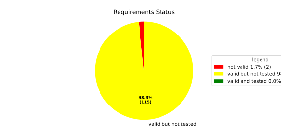
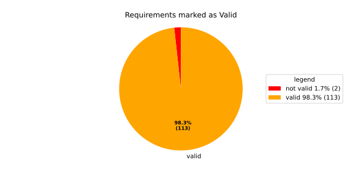
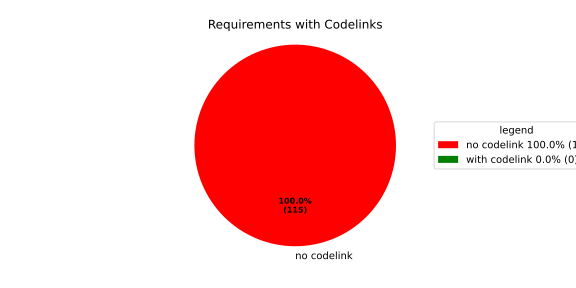

Component Requirements Statistics#
Overview#

In Detail#


No needs passed the filters
Failed Tests
Hint: This table should be empty. Before a PR can be merged all tests have to be successful.
No needs passed the filters
Skipped / Disabled Tests
No needs passed the filters
All passed Tests#
No needs passed the filters
Details About Testcases#
No needs passed the filters
No needs passed the filters
Test Log Files#
tests-report/src/launch_manager_daemon/health_monitor_lib/Notification_UT/test.log
exec ${PAGER:-/usr/bin/less} "$0" || exit 1
Executing tests from //src/launch_manager_daemon/health_monitor_lib:Notification_UT
-----------------------------------------------------------------------------
Running main() from gmock_main.cc
[==========] Running 5 tests from 2 test suites.
[----------] Global test environment set-up.
[----------] 4 tests from NotificationWithConfigTest
[ RUN ] NotificationWithConfigTest.CanGetNotificationName
mw::log initialization error: Error No logging configuration files could be found. occurred with context information: Failed to load configuration files. Fallback to console logging.
[ OK ] NotificationWithConfigTest.CanGetNotificationName (2 ms)
[ RUN ] NotificationWithConfigTest.SendsRequestAndNeverTimesOut
[ OK ] NotificationWithConfigTest.SendsRequestAndNeverTimesOut (0 ms)
[ RUN ] NotificationWithConfigTest.TimesOutWhenSendingRequestFails
2026/05/18 09:55:30.8130052 1952080 000 ECU1 NONE Rcvy log error verbose 2 Notification (TestNotification) Failed to enqueue recovery request (ring buffer full)
[ OK ] NotificationWithConfigTest.TimesOutWhenSendingRequestFails (0 ms)
[ RUN ] NotificationWithConfigTest.ProxyInitializationFails
2026/05/18 09:55:30.8130053 1952083 000 ECU1 NONE Rcvy log error verbose 3 Notification (TestNotification) Invalid ProcessGroupState identifier: InvalidIdentifier
[ OK ] NotificationWithConfigTest.ProxyInitializationFails (0 ms)
[----------] 4 tests from NotificationWithConfigTest (3 ms total)
[----------] 1 test from NotificationWithoutConfigTest
[ RUN ] NotificationWithoutConfigTest.WatchdogNotificationGoesDirectlyToTimeout
[ OK ] NotificationWithoutConfigTest.WatchdogNotificationGoesDirectlyToTimeout (0 ms)
[----------] 1 test from NotificationWithoutConfigTest (0 ms total)
[----------] Global test environment tear-down
[==========] 5 tests from 2 test suites ran. (4 ms total)
[ PASSED ] 5 tests.
tests-report/src/launch_manager_daemon/common/identifier_hash_UT/test.log
exec ${PAGER:-/usr/bin/less} "$0" || exit 1
Executing tests from //src/launch_manager_daemon/common:identifier_hash_UT
-----------------------------------------------------------------------------
Running main() from gmock_main.cc
[==========] Running 7 tests from 1 test suite.
[----------] Global test environment set-up.
[----------] 7 tests from IdentifierHashTest
[ RUN ] IdentifierHashTest.IdentifierHash_with_string_view_created
[ OK ] IdentifierHashTest.IdentifierHash_with_string_view_created (0 ms)
[ RUN ] IdentifierHashTest.IdentifierHash_with_string_created
[ OK ] IdentifierHashTest.IdentifierHash_with_string_created (0 ms)
[ RUN ] IdentifierHashTest.IdentifierHash_default_created
[ OK ] IdentifierHashTest.IdentifierHash_default_created (0 ms)
[ RUN ] IdentifierHashTest.IdentifierHash_invalid_hash_no_string_representation
[ OK ] IdentifierHashTest.IdentifierHash_invalid_hash_no_string_representation (0 ms)
[ RUN ] IdentifierHashTest.IdentifierHash_no_dangling_pointer_after_source_string_dies
[ OK ] IdentifierHashTest.IdentifierHash_no_dangling_pointer_after_source_string_dies (0 ms)
[ RUN ] IdentifierHashTest.IdentifierHash_EqualityOperators
[ OK ] IdentifierHashTest.IdentifierHash_EqualityOperators (0 ms)
[ RUN ] IdentifierHashTest.IdentifierHash_LessThanOperator
[ OK ] IdentifierHashTest.IdentifierHash_LessThanOperator (0 ms)
[----------] 7 tests from IdentifierHashTest (0 ms total)
[----------] Global test environment tear-down
[==========] 7 tests from 1 test suite ran. (0 ms total)
[ PASSED ] 7 tests.
tests-report/src/launch_manager_daemon/common/concurrency/mpmc_concurrent_queue_tsan_test/test.log
exec ${PAGER:-/usr/bin/less} "$0" || exit 1
Executing tests from //src/launch_manager_daemon/common/concurrency:mpmc_concurrent_queue_tsan_test
-----------------------------------------------------------------------------
Running main() from gmock_main.cc
[==========] Running 15 tests from 5 test suites.
[----------] Global test environment set-up.
[----------] 5 tests from MPMCConcurrentQueueTest_Basic
[ RUN ] MPMCConcurrentQueueTest_Basic.PushAndPopSingleItem
[ OK ] MPMCConcurrentQueueTest_Basic.PushAndPopSingleItem (0 ms)
[ RUN ] MPMCConcurrentQueueTest_Basic.PushAndPopPreservesOrder
[ OK ] MPMCConcurrentQueueTest_Basic.PushAndPopPreservesOrder (0 ms)
[ RUN ] MPMCConcurrentQueueTest_Basic.LvaluePushCopiesItem
[ OK ] MPMCConcurrentQueueTest_Basic.LvaluePushCopiesItem (0 ms)
[ RUN ] MPMCConcurrentQueueTest_Basic.RvaluePushWorksWithMoveOnlyType
[ OK ] MPMCConcurrentQueueTest_Basic.RvaluePushWorksWithMoveOnlyType (0 ms)
[ RUN ] MPMCConcurrentQueueTest_Basic.PopReturnsNulloptOnSemaphoreWaitFailure
[ OK ] MPMCConcurrentQueueTest_Basic.PopReturnsNulloptOnSemaphoreWaitFailure (22 ms)
[----------] 5 tests from MPMCConcurrentQueueTest_Basic (23 ms total)
[----------] 2 tests from MPMCConcurrentQueueTest_Timeout
[ RUN ] MPMCConcurrentQueueTest_Timeout.PushWithTimeoutSucceedsWhenSlotAvailable
[ OK ] MPMCConcurrentQueueTest_Timeout.PushWithTimeoutSucceedsWhenSlotAvailable (0 ms)
[ RUN ] MPMCConcurrentQueueTest_Timeout.PushWithTimeoutReturnsFalseWhenFull
[ OK ] MPMCConcurrentQueueTest_Timeout.PushWithTimeoutReturnsFalseWhenFull (21 ms)
[----------] 2 tests from MPMCConcurrentQueueTest_Timeout (22 ms total)
[----------] 3 tests from MPMCConcurrentQueueTest_Stop
[ RUN ] MPMCConcurrentQueueTest_Stop.PushReturnsFalseAfterStop
[ OK ] MPMCConcurrentQueueTest_Stop.PushReturnsFalseAfterStop (0 ms)
[ RUN ] MPMCConcurrentQueueTest_Stop.PopReturnsNulloptWhenStoppedAndEmpty
[ OK ] MPMCConcurrentQueueTest_Stop.PopReturnsNulloptWhenStoppedAndEmpty (0 ms)
[ RUN ] MPMCConcurrentQueueTest_Stop.ItemsAreDroppedAfterStop
[ OK ] MPMCConcurrentQueueTest_Stop.ItemsAreDroppedAfterStop (0 ms)
[----------] 3 tests from MPMCConcurrentQueueTest_Stop (0 ms total)
[----------] 4 tests from MPMCConcurrentQueueTest_Blocking
[ RUN ] MPMCConcurrentQueueTest_Blocking.PopBlocksUntilItemAvailable
[ OK ] MPMCConcurrentQueueTest_Blocking.PopBlocksUntilItemAvailable (0 ms)
[ RUN ] MPMCConcurrentQueueTest_Blocking.PushBlocksWhenFull
[ OK ] MPMCConcurrentQueueTest_Blocking.PushBlocksWhenFull (0 ms)
[ RUN ] MPMCConcurrentQueueTest_Blocking.StopUnblocksBlockedConsumer
[ OK ] MPMCConcurrentQueueTest_Blocking.StopUnblocksBlockedConsumer (0 ms)
[ RUN ] MPMCConcurrentQueueTest_Blocking.StopUnblocksBlockedProducer
[ OK ] MPMCConcurrentQueueTest_Blocking.StopUnblocksBlockedProducer (0 ms)
[----------] 4 tests from MPMCConcurrentQueueTest_Blocking (1 ms total)
[----------] 1 test from MPMCConcurrentQueueTest_MPMC
[ RUN ] MPMCConcurrentQueueTest_MPMC.AllItemsDelivered
[ OK ] MPMCConcurrentQueueTest_MPMC.AllItemsDelivered (6 ms)
[----------] 1 test from MPMCConcurrentQueueTest_MPMC (6 ms total)
[----------] Global test environment tear-down
[==========] 15 tests from 5 test suites ran. (55 ms total)
[ PASSED ] 15 tests.
tests-report/src/launch_manager_daemon/common/concurrency/mpmc_concurrent_queue_test/test.log
exec ${PAGER:-/usr/bin/less} "$0" || exit 1
Executing tests from //src/launch_manager_daemon/common/concurrency:mpmc_concurrent_queue_test
-----------------------------------------------------------------------------
Running main() from gmock_main.cc
[==========] Running 15 tests from 5 test suites.
[----------] Global test environment set-up.
[----------] 5 tests from MPMCConcurrentQueueTest_Basic
[ RUN ] MPMCConcurrentQueueTest_Basic.PushAndPopSingleItem
[ OK ] MPMCConcurrentQueueTest_Basic.PushAndPopSingleItem (0 ms)
[ RUN ] MPMCConcurrentQueueTest_Basic.PushAndPopPreservesOrder
[ OK ] MPMCConcurrentQueueTest_Basic.PushAndPopPreservesOrder (0 ms)
[ RUN ] MPMCConcurrentQueueTest_Basic.LvaluePushCopiesItem
[ OK ] MPMCConcurrentQueueTest_Basic.LvaluePushCopiesItem (0 ms)
[ RUN ] MPMCConcurrentQueueTest_Basic.RvaluePushWorksWithMoveOnlyType
[ OK ] MPMCConcurrentQueueTest_Basic.RvaluePushWorksWithMoveOnlyType (0 ms)
[ RUN ] MPMCConcurrentQueueTest_Basic.PopReturnsNulloptOnSemaphoreWaitFailure
[ OK ] MPMCConcurrentQueueTest_Basic.PopReturnsNulloptOnSemaphoreWaitFailure (23 ms)
[----------] 5 tests from MPMCConcurrentQueueTest_Basic (23 ms total)
[----------] 2 tests from MPMCConcurrentQueueTest_Timeout
[ RUN ] MPMCConcurrentQueueTest_Timeout.PushWithTimeoutSucceedsWhenSlotAvailable
[ OK ] MPMCConcurrentQueueTest_Timeout.PushWithTimeoutSucceedsWhenSlotAvailable (0 ms)
[ RUN ] MPMCConcurrentQueueTest_Timeout.PushWithTimeoutReturnsFalseWhenFull
[ OK ] MPMCConcurrentQueueTest_Timeout.PushWithTimeoutReturnsFalseWhenFull (21 ms)
[----------] 2 tests from MPMCConcurrentQueueTest_Timeout (21 ms total)
[----------] 3 tests from MPMCConcurrentQueueTest_Stop
[ RUN ] MPMCConcurrentQueueTest_Stop.PushReturnsFalseAfterStop
[ OK ] MPMCConcurrentQueueTest_Stop.PushReturnsFalseAfterStop (0 ms)
[ RUN ] MPMCConcurrentQueueTest_Stop.PopReturnsNulloptWhenStoppedAndEmpty
[ OK ] MPMCConcurrentQueueTest_Stop.PopReturnsNulloptWhenStoppedAndEmpty (0 ms)
[ RUN ] MPMCConcurrentQueueTest_Stop.ItemsAreDroppedAfterStop
[ OK ] MPMCConcurrentQueueTest_Stop.ItemsAreDroppedAfterStop (0 ms)
[----------] 3 tests from MPMCConcurrentQueueTest_Stop (0 ms total)
[----------] 4 tests from MPMCConcurrentQueueTest_Blocking
[ RUN ] MPMCConcurrentQueueTest_Blocking.PopBlocksUntilItemAvailable
[ OK ] MPMCConcurrentQueueTest_Blocking.PopBlocksUntilItemAvailable (0 ms)
[ RUN ] MPMCConcurrentQueueTest_Blocking.PushBlocksWhenFull
[ OK ] MPMCConcurrentQueueTest_Blocking.PushBlocksWhenFull (0 ms)
[ RUN ] MPMCConcurrentQueueTest_Blocking.StopUnblocksBlockedConsumer
[ OK ] MPMCConcurrentQueueTest_Blocking.StopUnblocksBlockedConsumer (0 ms)
[ RUN ] MPMCConcurrentQueueTest_Blocking.StopUnblocksBlockedProducer
[ OK ] MPMCConcurrentQueueTest_Blocking.StopUnblocksBlockedProducer (0 ms)
[----------] 4 tests from MPMCConcurrentQueueTest_Blocking (1 ms total)
[----------] 1 test from MPMCConcurrentQueueTest_MPMC
[ RUN ] MPMCConcurrentQueueTest_MPMC.AllItemsDelivered
[ OK ] MPMCConcurrentQueueTest_MPMC.AllItemsDelivered (4 ms)
[----------] 1 test from MPMCConcurrentQueueTest_MPMC (4 ms total)
[----------] Global test environment tear-down
[==========] 15 tests from 5 test suites ran. (51 ms total)
[ PASSED ] 15 tests.
tests-report/src/launch_manager_daemon/process_state_client_lib/processstateclient_UT/test.log
exec ${PAGER:-/usr/bin/less} "$0" || exit 1
Executing tests from //src/launch_manager_daemon/process_state_client_lib:processstateclient_UT
-----------------------------------------------------------------------------
Running main() from gmock_main.cc
[==========] Running 4 tests from 1 test suite.
[----------] Global test environment set-up.
[----------] 4 tests from ProcessStateClient_UT
[ RUN ] ProcessStateClient_UT.ProcessStateClient_ConstructReceiver_Succeeds
[ OK ] ProcessStateClient_UT.ProcessStateClient_ConstructReceiver_Succeeds (0 ms)
[ RUN ] ProcessStateClient_UT.ProcessStateClient_QueueOneProcess_Succeeds
[ OK ] ProcessStateClient_UT.ProcessStateClient_QueueOneProcess_Succeeds (0 ms)
[ RUN ] ProcessStateClient_UT.ProcessStateClient_QueueMaxNumberOfProcesses_Succeeds
[ OK ] ProcessStateClient_UT.ProcessStateClient_QueueMaxNumberOfProcesses_Succeeds (11 ms)
[ RUN ] ProcessStateClient_UT.ProcessStateClient_QueueOneProcessTooMany_Fails
mw::log initialization error: Error No logging configuration files could be found. occurred with context information: Failed to load configuration files. Fallback to console logging.
2026/05/28 09:33:47.827551 2475567 000 ECU1 NONE LM log error verbose 1 Failed to queue posix process
2026/05/28 09:33:47.827551 2475569 000 ECU1 NONE LM log error verbose 1 ProcessStateReceiver::getNextChangedPosixProcess: Overflow occurred, will be reported as kCommunicationError
[ OK ] ProcessStateClient_UT.ProcessStateClient_QueueOneProcessTooMany_Fails (6 ms)
[----------] 4 tests from ProcessStateClient_UT (18 ms total)
[----------] Global test environment tear-down
[==========] 4 tests from 1 test suite ran. (19 ms total)
[ PASSED ] 4 tests.
tests-report/src/launch_manager_daemon/recovery_client_lib/recovery_client_UT/test.log
exec ${PAGER:-/usr/bin/less} "$0" || exit 1
Executing tests from //src/launch_manager_daemon/recovery_client_lib:recovery_client_UT
-----------------------------------------------------------------------------
Running main() from gmock_main.cc
[==========] Running 5 tests from 1 test suite.
[----------] Global test environment set-up.
[----------] 5 tests from RecoveryClientTest
[ RUN ] RecoveryClientTest.SendSingleRequest
[ OK ] RecoveryClientTest.SendSingleRequest (0 ms)
[ RUN ] RecoveryClientTest.GetNextRequest
[ OK ] RecoveryClientTest.GetNextRequest (0 ms)
[ RUN ] RecoveryClientTest.GetNextRequestEmpty
[ OK ] RecoveryClientTest.GetNextRequestEmpty (0 ms)
[ RUN ] RecoveryClientTest.RingBufferFull
[ OK ] RecoveryClientTest.RingBufferFull (0 ms)
[ RUN ] RecoveryClientTest.FIFOOrdering
[ OK ] RecoveryClientTest.FIFOOrdering (0 ms)
[----------] 5 tests from RecoveryClientTest (0 ms total)
[----------] Global test environment tear-down
[==========] 5 tests from 1 test suite ran. (0 ms total)
[ PASSED ] 5 tests.
tests-report/src/health_monitoring_lib/tests/test.log
exec ${PAGER:-/usr/bin/less} "$0" || exit 1
Executing tests from //src/health_monitoring_lib:tests
-----------------------------------------------------------------------------
running 232 tests
test common::tests::time_offset_diff_too_large - should panic ... ok
test common::tests::duration_to_int_too_large - should panic ... ok
test common::tests::time_offset_valid ... ok
test common::tests::duration_to_int_valid ... ok
test common::tests::time_offset_wrong_order ... ok
test common::tests::time_range_from_interval_lower_too_large - should panic ... ok
test common::tests::time_range_from_interval_valid ... ok
test common::tests::time_range_new_valid ... ok
test common::tests::time_range_new_wrong_order - should panic ... ok
test deadline::common::tests::acquire_and_release_deadline ... ok
test deadline::common::tests::new_and_fields ... ok
test deadline::deadline_monitor::tests::deadline_outside_time_range_is_error_when_dropped_after_evaluate ... ok
test deadline::deadline_monitor::tests::get_deadline_unknown_tag ... ok
test deadline::deadline_monitor::tests::deadline_failed_on_first_run_and_then_restarted_is_evaluated_as_error ... ok
test deadline::deadline_monitor::tests::start_stop_deadline_outside_ranges_is_error_when_dropped_before_evaluate ... ok
test deadline::common::tests::concurrent_acquire ... ok
test deadline::deadline_monitor::tests::start_stop_deadline_outside_ranges_is_evaluated_as_error ... ok
test deadline::deadline_state::tests::as_u64_and_new ... ok
test deadline::deadline_state::tests::deadline_state_default_and_snapshot ... ok
test deadline::deadline_state::tests::deadline_state_update_none_returns_err ... ok
test deadline::deadline_state::tests::deadline_state_update_success ... ok
test deadline::deadline_state::tests::default_state ... ok
test deadline::deadline_state::tests::set_and_get_timestamp_ms ... ok
test deadline::deadline_state::tests::set_running ... ok
test deadline::deadline_state::tests::set_underrun ... ok
test deadline::ffi::tests::deadline_destroy_null_deadline ... ok
test deadline::ffi::tests::deadline_monitor_builder_add_deadline_invalid_range ... ok
test deadline::ffi::tests::deadline_monitor_builder_add_deadline_null_builder ... ok
test deadline::ffi::tests::deadline_monitor_builder_add_deadline_null_deadline_tag ... ok
test deadline::ffi::tests::deadline_monitor_builder_add_deadline_succeeds ... ok
test deadline::ffi::tests::deadline_monitor_builder_create_null_builder ... ok
test deadline::ffi::tests::deadline_monitor_builder_create_succeeds ... ok
test deadline::ffi::tests::deadline_monitor_builder_destroy_null_builder ... ok
test deadline::ffi::tests::deadline_monitor_destroy_null_monitor ... ok
test deadline::ffi::tests::deadline_monitor_get_deadline_null_deadline_handle ... ok
test deadline::ffi::tests::deadline_monitor_get_deadline_null_deadline_tag ... ok
test deadline::ffi::tests::deadline_monitor_get_deadline_null_monitor ... ok
test deadline::ffi::tests::deadline_monitor_get_deadline_succeeds ... ok
test deadline::ffi::tests::deadline_monitor_get_deadline_unknown_deadline ... ok
test deadline::ffi::tests::deadline_start_already_started ... ok
test deadline::ffi::tests::deadline_start_null_deadline ... ok
test deadline::ffi::tests::deadline_start_succeeds ... ok
test deadline::ffi::tests::deadline_stop_null_deadline ... ok
test deadline::ffi::tests::deadline_stop_succeeds ... ok
test ffi::tests::health_monitor_builder_add_deadline_monitor_null_deadline_monitor_builder ... ok
test ffi::tests::health_monitor_builder_add_deadline_monitor_null_hmon_builder ... ok
test ffi::tests::health_monitor_builder_add_deadline_monitor_null_monitor_tag ... ok
test ffi::tests::health_monitor_builder_add_deadline_monitor_succeeds ... ok
test ffi::tests::health_monitor_builder_add_heartbeat_monitor_null_heartbeat_monitor_builder ... ok
test ffi::tests::health_monitor_builder_add_heartbeat_monitor_null_hmon_builder ... ok
test ffi::tests::health_monitor_builder_add_heartbeat_monitor_null_monitor_tag ... ok
test ffi::tests::health_monitor_builder_add_heartbeat_monitor_succeeds ... ok
test ffi::tests::health_monitor_builder_add_logic_monitor_null_hmon_builder ... ok
test ffi::tests::health_monitor_builder_add_logic_monitor_null_logic_monitor_builder ... ok
test ffi::tests::health_monitor_builder_add_logic_monitor_null_monitor_tag ... ok
test ffi::tests::health_monitor_builder_add_logic_monitor_succeeds ... ok
test ffi::tests::health_monitor_builder_build_invalid_cycle_intervals ... ok
test ffi::tests::health_monitor_builder_build_no_monitors ... ok
test ffi::tests::health_monitor_builder_build_null_builder_handle ... ok
test ffi::tests::health_monitor_builder_build_null_monitor_handle ... ok
test ffi::tests::health_monitor_builder_build_succeeds ... ok
test ffi::tests::health_monitor_builder_build_thread_parameters ... ok
test ffi::tests::health_monitor_builder_build_valid_cycle_intervals_succeeds ... ok
test ffi::tests::health_monitor_builder_create_null_handle ... ok
test ffi::tests::health_monitor_builder_create_succeeds ... ok
test ffi::tests::health_monitor_builder_destroy_null_handle ... ok
test ffi::tests::health_monitor_destroy_null_hmon ... ok
test ffi::tests::health_monitor_get_deadline_monitor_already_taken ... ok
test ffi::tests::health_monitor_get_deadline_monitor_null_deadline_monitor ... ok
test ffi::tests::health_monitor_get_deadline_monitor_null_monitor_tag ... ok
test ffi::tests::health_monitor_get_deadline_monitor_null_hmon ... ok
test ffi::tests::health_monitor_get_deadline_monitor_succeeds ... ok
test ffi::tests::health_monitor_get_heartbeat_monitor_already_taken ... ok
test ffi::tests::health_monitor_get_heartbeat_monitor_null_heartbeat_monitor ... ok
test ffi::tests::health_monitor_get_heartbeat_monitor_null_hmon ... ok
test ffi::tests::health_monitor_get_heartbeat_monitor_null_monitor_tag ... ok
test ffi::tests::health_monitor_get_heartbeat_monitor_succeeds ... ok
test ffi::tests::health_monitor_get_logic_monitor_already_taken ... ok
test ffi::tests::health_monitor_get_logic_monitor_null_hmon ... ok
test ffi::tests::health_monitor_get_logic_monitor_null_logic_monitor ... ok
test ffi::tests::health_monitor_get_logic_monitor_null_monitor_tag ... ok
test ffi::tests::health_monitor_get_logic_monitor_succeeds ... ok
test ffi::tests::health_monitor_start_monitor_not_taken ... ok
test ffi::tests::health_monitor_start_null_hmon ... ok
[2026/04/28 06:24:01.7923605][9537][HMON][INFO] Monitoring thread started.
[2026/04/28 06:24:01.7923735][9537][HMON][INFO] Monitoring thread exiting.
test health_monitor::tests::health_monitor_builder_build_invalid_cycles ... ok
test ffi::tests::health_monitor_start_succeeds ... ok
test health_monitor::tests::health_monitor_builder_build_no_monitors ... ok
test health_monitor::tests::health_monitor_builder_build_succeeds ... ok
test health_monitor::tests::health_monitor_builder_new_succeeds ... ok
test health_monitor::tests::health_monitor_get_deadline_monitor_available ... ok
test health_monitor::tests::health_monitor_get_deadline_monitor_invalid_state ... ok
test health_monitor::tests::health_monitor_get_deadline_monitor_taken ... ok
test health_monitor::tests::health_monitor_get_heartbeat_monitor_available ... ok
test health_monitor::tests::health_monitor_get_deadline_monitor_unknown ... ok
test health_monitor::tests::health_monitor_get_heartbeat_monitor_invalid_state ... ok
test health_monitor::tests::health_monitor_get_heartbeat_monitor_taken ... ok
test health_monitor::tests::health_monitor_get_heartbeat_monitor_unknown ... ok
test health_monitor::tests::health_monitor_get_logic_monitor_invalid_state ... ok
test health_monitor::tests::health_monitor_get_logic_monitor_available ... ok
test health_monitor::tests::health_monitor_get_logic_monitor_taken ... ok
test health_monitor::tests::health_monitor_get_logic_monitor_unknown ... ok
test health_monitor::tests::health_monitor_start_monitors_not_taken - should panic ... ok
[2026/04/28 06:24:01.7938501][9537][HMON][INFO] Monitoring thread started.
test heartbeat::ffi::tests::heartbeat_monitor_builder_create_invalid_range ... ok
[2026/04/28 06:24:01.7939423][9537][HMON][INFO] Monitoring thread exiting.
test heartbeat::ffi::tests::heartbeat_monitor_builder_create_null_builder ... ok
test health_monitor::tests::health_monitor_start_succeeds ... ok
test heartbeat::ffi::tests::heartbeat_monitor_builder_create_succeeds ... ok
test heartbeat::ffi::tests::heartbeat_monitor_builder_destroy_null_builder ... ok
test heartbeat::ffi::tests::heartbeat_monitor_heartbeat_null_monitor ... ok
test heartbeat::ffi::tests::heartbeat_monitor_destroy_null_monitor ... ok
test heartbeat::ffi::tests::heartbeat_monitor_heartbeat_succeeds ... ok
test deadline::deadline_monitor::tests::monitor_with_multiple_running_deadlines ... ok
test heartbeat::heartbeat_monitor::tests::heartbeat_monitor_beat_early_evaluate_early ... ok
test heartbeat::heartbeat_monitor::tests::heartbeat_monitor_beat_early_evaluate_in_range ... ok
test heartbeat::heartbeat_monitor::tests::heartbeat_monitor_beat_in_range_evaluate_in_range ... ok
test heartbeat::heartbeat_monitor::tests::heartbeat_monitor_beat_early_evaluate_late ... ok
test heartbeat::heartbeat_monitor::tests::heartbeat_monitor_builder_build_invalid_internal_processing_cycle ... ok
test heartbeat::heartbeat_monitor::tests::heartbeat_monitor_builder_build_ok ... ok
test heartbeat::heartbeat_monitor::tests::heartbeat_monitor_beat_in_range_evaluate_late ... ok
test heartbeat::heartbeat_monitor::tests::heartbeat_monitor_beat_late_evaluate_late ... ok
test heartbeat::heartbeat_monitor::tests::heartbeat_monitor_cycle_early ... ok
test heartbeat::heartbeat_monitor::tests::heartbeat_monitor_multiple_beats_early_evaluate_early ... ok
test heartbeat::heartbeat_monitor::tests::heartbeat_monitor_cycle_in_range ... ok
test heartbeat::heartbeat_monitor::tests::heartbeat_monitor_multiple_beats_early_evaluate_in_range ... ok
test heartbeat::heartbeat_monitor::tests::heartbeat_monitor_cycle_late ... ok
test heartbeat::heartbeat_monitor::tests::heartbeat_monitor_multiple_beats_early_evaluate_late ... ok
test heartbeat::heartbeat_monitor::tests::heartbeat_monitor_multiple_beats_in_range_evaluate_in_range ... ok
test heartbeat::heartbeat_monitor::tests::heartbeat_monitor_no_beat_evaluate_early ... ok
test heartbeat::heartbeat_monitor::tests::heartbeat_monitor_no_beat_evaluate_in_range ... ok
test heartbeat::heartbeat_monitor::tests::heartbeat_monitor_multiple_beats_in_range_evaluate_late ... ok
test heartbeat::heartbeat_monitor::tests::heartbeat_monitor_multiple_beats_late_evaluate_late ... ok
test heartbeat::heartbeat_state::tests::snapshot_counter_increment ... ok
test heartbeat::heartbeat_state::tests::snapshot_default ... ok
test heartbeat::heartbeat_state::tests::snapshot_from_u64_max ... ok
test heartbeat::heartbeat_state::tests::snapshot_from_u64_valid ... ok
test heartbeat::heartbeat_state::tests::snapshot_from_u64_zero ... ok
test heartbeat::heartbeat_state::tests::snapshot_new_succeeds ... ok
test heartbeat::heartbeat_state::tests::snapshot_set_heartbeat_timestamp_out_of_range - should panic ... ok
test heartbeat::heartbeat_state::tests::snapshot_set_heartbeat_timestamp_valid ... ok
test heartbeat::heartbeat_state::tests::state_default ... ok
test heartbeat::heartbeat_state::tests::state_new ... ok
test heartbeat::heartbeat_state::tests::state_reset ... ok
test heartbeat::heartbeat_state::tests::state_snapshot ... ok
test heartbeat::heartbeat_state::tests::state_update_none ... ok
test heartbeat::heartbeat_state::tests::state_update_some ... ok
test logic::ffi::tests::logic_monitor_builder_add_state_null_allowed_states_many_elements ... ok
test logic::ffi::tests::logic_monitor_builder_add_state_null_allowed_states_zero_elements ... ok
test logic::ffi::tests::logic_monitor_builder_add_state_null_builder ... ok
test logic::ffi::tests::logic_monitor_builder_add_state_null_tag ... ok
test logic::ffi::tests::logic_monitor_builder_add_state_succeeds ... ok
test logic::ffi::tests::logic_monitor_builder_create_null_builder ... ok
test logic::ffi::tests::logic_monitor_builder_create_null_initial_state ... ok
test logic::ffi::tests::logic_monitor_builder_create_succeeds ... ok
test logic::ffi::tests::logic_monitor_builder_destroy_null_builder ... ok
test logic::ffi::tests::logic_monitor_destroy_null_monitor ... ok
test logic::ffi::tests::logic_monitor_state_fails ... ok
test logic::ffi::tests::logic_monitor_state_null_monitor ... ok
test logic::ffi::tests::logic_monitor_state_null_state ... ok
test logic::ffi::tests::logic_monitor_state_succeeds ... ok
test logic::ffi::tests::logic_monitor_transition_fails ... ok
test logic::ffi::tests::logic_monitor_transition_null_monitor ... ok
test logic::ffi::tests::logic_monitor_transition_null_target_state ... ok
test logic::ffi::tests::logic_monitor_transition_succeeds ... ok
test logic::logic_monitor::tests::logic_monitor_builder_build_no_states ... ok
test logic::logic_monitor::tests::logic_monitor_builder_build_succeeds ... ok
test logic::logic_monitor::tests::logic_monitor_builder_build_undefined_initial_state ... ok
test logic::logic_monitor::tests::logic_monitor_builder_build_undefined_target ... ok
test logic::logic_monitor::tests::logic_monitor_builder_new_succeeds ... ok
test logic::logic_monitor::tests::logic_monitor_evaluate_invalid_state ... ok
test logic::logic_monitor::tests::logic_monitor_evaluate_invalid_transition ... ok
test logic::logic_monitor::tests::logic_monitor_evaluate_succeeds ... ok
test logic::logic_monitor::tests::logic_monitor_state_indeterminate_current_state ... ok
test logic::logic_monitor::tests::logic_monitor_state_succeeds ... ok
test logic::logic_monitor::tests::logic_monitor_transition_indeterminate_current_state ... ok
test logic::logic_monitor::tests::logic_monitor_transition_invalid_transition ... ok
test logic::logic_monitor::tests::logic_monitor_transition_succeeds ... ok
test logic::logic_monitor::tests::logic_monitor_transition_unknown_node ... ok
test logic::logic_state::tests::snapshot_from_u64_max ... ok
test logic::logic_state::tests::snapshot_from_u64_valid ... ok
test logic::logic_state::tests::snapshot_from_u64_zero ... ok
test logic::logic_state::tests::snapshot_new_succeeds ... ok
test logic::logic_state::tests::snapshot_set_current_state_index_valid ... ok
test logic::logic_state::tests::snapshot_set_heartbeat_timestamp_out_of_range - should panic ... ok
test logic::logic_state::tests::snapshot_set_monitor_status_valid ... ok
test logic::logic_state::tests::state_new ... ok
test logic::logic_state::tests::state_snapshot ... ok
test logic::logic_state::tests::state_swap ... ok
test tag::tests::deadline_tag_debug ... ok
test tag::tests::deadline_tag_from_str ... ok
test tag::tests::deadline_tag_from_string ... ok
test tag::tests::deadline_tag_new ... ok
test tag::tests::deadline_tag_score_debug ... ok
test tag::tests::monitor_tag_debug ... ok
test tag::tests::monitor_tag_from_str ... ok
test tag::tests::monitor_tag_from_string ... ok
test tag::tests::monitor_tag_new ... ok
test tag::tests::monitor_tag_score_debug ... ok
test tag::tests::state_tag_debug ... ok
test tag::tests::state_tag_from_str ... ok
test tag::tests::state_tag_from_string ... ok
test tag::tests::state_tag_new ... ok
test tag::tests::state_tag_score_debug ... ok
test tag::tests::tag_debug ... ok
test tag::tests::tag_hash_is_eq ... ok
test tag::tests::tag_hash_is_ne ... ok
test tag::tests::tag_new ... ok
test tag::tests::tag_partial_eq_is_eq ... ok
test tag::tests::tag_partial_eq_is_ne ... ok
test tag::tests::tag_score_debug ... ok
test tag::tests::test_from_str ... ok
test tag::tests::test_from_string ... ok
test thread_ffi::tests::scheduler_policy_priority_max_null_priority ... ok
test thread_ffi::tests::scheduler_policy_priority_max_succeeds ... ok
test thread_ffi::tests::scheduler_policy_priority_min_null_priority ... ok
test thread_ffi::tests::scheduler_policy_priority_min_succeeds ... ok
test thread_ffi::tests::thread_parameters_affinity_null_affinity_many_elements ... ok
test thread_ffi::tests::thread_parameters_affinity_null_affinity_zero_elements ... ok
test thread_ffi::tests::thread_parameters_affinity_null_handle ... ok
test thread_ffi::tests::thread_parameters_affinity_succeeds ... ok
test thread_ffi::tests::thread_parameters_create_succeeds ... ok
test thread_ffi::tests::thread_parameters_destroy_null_handle ... ok
test thread_ffi::tests::thread_parameters_scheduler_parameters_invalid_priority ... ok
test thread_ffi::tests::thread_parameters_scheduler_parameters_null_handle ... ok
test thread_ffi::tests::thread_parameters_scheduler_parameters_succeeds ... ok
test thread_ffi::tests::thread_parameters_stack_size_null_handle ... ok
test thread_ffi::tests::thread_parameters_stack_size_succeeds ... ok
test worker::tests::monitoring_logic_report_alive_on_each_call_when_no_error ... ok
test heartbeat::heartbeat_monitor::tests::heartbeat_monitor_no_beat_evaluate_late ... ok
test worker::tests::monitoring_logic_report_error_when_deadline_failed ... ok
[2026/04/28 06:24:02.7527556][9537][HMON][INFO] Monitoring thread started.
test deadline::deadline_monitor::tests::start_stop_deadline_within_range_works ... ok
[2026/04/28 06:24:02.8131427][9537][HMON][WARN] Deadline (DeadlineTag(deadline_fast)) missed! Expected: 50, now: 60
[2026/04/28 06:24:02.8131727][9537][HMON][WARN] Deadline monitor with tag MonitorTag(deadline_monitor) reported error: TooLate.
[2026/04/28 06:24:02.8131797][9537][HMON][WARN] One or more monitors reported errors, skipping AliveAPI notification.
[2026/04/28 06:24:02.8131845][9537][HMON][INFO] Monitoring logic failed, stopping thread.
[2026/04/28 06:24:02.8131888][9537][HMON][INFO] Monitoring thread exiting.
test worker::tests::monitoring_logic_report_alive_respect_cycle ... ok
test worker::tests::unique_thread_runner_monitoring_works ... ok
test heartbeat::heartbeat_monitor::tests::heartbeat_monitor_timestamp_offset ... ok
test result: ok. 232 passed; 0 failed; 0 ignored; 0 measured; 0 filtered out; finished in 1.25s
tests-report/src/health_monitoring_lib/cpp_tests/test.log
exec ${PAGER:-/usr/bin/less} "$0" || exit 1
Executing tests from //src/health_monitoring_lib:cpp_tests
-----------------------------------------------------------------------------
Running main() from gmock_main.cc
[==========] Running 1 test from 1 test suite.
[----------] Global test environment set-up.
[----------] 1 test from HealthMonitorTest
[ RUN ] HealthMonitorTest.TestName
[2026/05/28 09:33:47.7015181][src/health_monitoring_lib/rust/deadline/deadline_monitor.rs:217][5295][HMON][ERROR] Deadline DeadlineTag(deadline_1) stopped too early by 100 ms
[2026/05/28 09:33:47.7016583][src/health_monitoring_lib/rust/worker.rs:121][5295][HMON][INFO] Monitoring thread started.
[2026/05/28 09:33:47.7016830][src/health_monitoring_lib/rust/worker.rs:139][5295][HMON][INFO] Monitoring thread exiting.
[ OK ] HealthMonitorTest.TestName (1 ms)
[----------] 1 test from HealthMonitorTest (1 ms total)
[----------] Global test environment tear-down
[==========] 1 test from 1 test suite ran. (1 ms total)
[ PASSED ] 1 test.
tests-report/src/health_monitoring_lib/loom_tests/test.log
exec ${PAGER:-/usr/bin/less} "$0" || exit 1
Executing tests from //src/health_monitoring_lib:loom_tests
-----------------------------------------------------------------------------
running 3 tests
test heartbeat::heartbeat_monitor::loom_tests::heartbeat_monitor_heartbeat_evaluate_too_early ... ok
test heartbeat::heartbeat_monitor::loom_tests::heartbeat_monitor_heartbeat_evaluate_in_range ... ok
test heartbeat::heartbeat_monitor::loom_tests::heartbeat_monitor_heartbeat_evaluate_too_late ... ok
test result: ok. 3 passed; 0 failed; 0 ignored; 0 measured; 0 filtered out; finished in 0.70s
tests-report/tests/integration/smoke/smoke/test.log
exec ${PAGER:-/usr/bin/less} "$0" || exit 1
Executing tests from //tests/integration/smoke:smoke
-----------------------------------------------------------------------------
============================= test session starts ==============================
platform linux -- Python 3.12.12, pytest-9.0.3, pluggy-1.5.0
rootdir: /home/runner/.bazel/sandbox/processwrapper-sandbox/852/execroot/_main/bazel-out/k8-fastbuild/bin/tests/integration/smoke/smoke.runfiles/score_itf+
configfile: pytest.ini
collected 1 item
../score_itf+::test_smoke
-------------------------------- live log setup --------------------------------
[2026-05-28 09:33:52.176] [INFO] [score.itf.plugins.docker] Executing custom image bootstrap command: tests/utils/environments/x86_64-linux/x86_64-linux.sh
[2026-05-28 09:33:53.852] [DEBUG] [docker.utils.config] Trying paths: ['/home/runner/.docker/config.json', '/home/runner/.dockercfg']
[2026-05-28 09:33:53.852] [DEBUG] [docker.utils.config] Found file at path: /home/runner/.docker/config.json
[2026-05-28 09:33:53.852] [DEBUG] [docker.auth] Found 'auths' section
[2026-05-28 09:33:53.852] [DEBUG] [docker.auth] Found entry (registry='https://index.docker.io/v1/', username='githubactions')
[2026-05-28 09:33:53.862] [DEBUG] [urllib3.connectionpool] http://localhost:None "GET /version HTTP/1.1" 200 823
[2026-05-28 09:33:56.240] [DEBUG] [urllib3.connectionpool] http://localhost:None "POST /v1.48/containers/create HTTP/1.1" 201 88
[2026-05-28 09:33:56.242] [DEBUG] [urllib3.connectionpool] http://localhost:None "GET /v1.48/containers/e4e7752d2930ed3bfffae58b68509a42cd5102f52ce3b8fb53cee2bc66a51878/json HTTP/1.1" 200 None
[2026-05-28 09:33:56.446] [DEBUG] [urllib3.connectionpool] http://localhost:None "POST /v1.48/containers/e4e7752d2930ed3bfffae58b68509a42cd5102f52ce3b8fb53cee2bc66a51878/start HTTP/1.1" 204 0
[2026-05-28 09:33:56.447] [DEBUG] [docker.utils.config] Trying paths: ['/home/runner/.docker/config.json', '/home/runner/.dockercfg']
[2026-05-28 09:33:56.447] [DEBUG] [docker.utils.config] Found file at path: /home/runner/.docker/config.json
[2026-05-28 09:33:56.448] [DEBUG] [docker.auth] Found 'auths' section
[2026-05-28 09:33:56.448] [DEBUG] [docker.auth] Found entry (registry='https://index.docker.io/v1/', username='githubactions')
[2026-05-28 09:33:56.456] [DEBUG] [urllib3.connectionpool] http://localhost:None "GET /version HTTP/1.1" 200 823
[2026-05-28 09:33:56.458] [DEBUG] [urllib3.connectionpool] http://localhost:None "POST /v1.48/containers/e4e7752d2930ed3bfffae58b68509a42cd5102f52ce3b8fb53cee2bc66a51878/exec HTTP/1.1" 201 74
[2026-05-28 09:33:56.461] [DEBUG] [urllib3.connectionpool] http://localhost:None "POST /v1.48/exec/cbb7ded22193841e2a407470cb2ae1f5b762515e60ff043713524b6bced43fa1/start HTTP/1.1" 101 0
[2026-05-28 09:33:56.513] [DEBUG] [urllib3.connectionpool] http://localhost:None "GET /v1.48/exec/cbb7ded22193841e2a407470cb2ae1f5b762515e60ff043713524b6bced43fa1/json HTTP/1.1" 200 390
[2026-05-28 09:33:56.570] [DEBUG] [urllib3.connectionpool] http://localhost:None "PUT /v1.48/containers/e4e7752d2930ed3bfffae58b68509a42cd5102f52ce3b8fb53cee2bc66a51878/archive?path=%2Ftmp HTTP/1.1" 200 0
[2026-05-28 09:33:56.572] [DEBUG] [urllib3.connectionpool] http://localhost:None "POST /v1.48/containers/e4e7752d2930ed3bfffae58b68509a42cd5102f52ce3b8fb53cee2bc66a51878/exec HTTP/1.1" 201 74
[2026-05-28 09:33:56.574] [DEBUG] [urllib3.connectionpool] http://localhost:None "POST /v1.48/exec/156f1ce60a36f564de8a7f30a741ba162f27bf032081065751ab061b26b4f577/start HTTP/1.1" 101 0
[2026-05-28 09:33:56.641] [DEBUG] [urllib3.connectionpool] http://localhost:None "GET /v1.48/exec/156f1ce60a36f564de8a7f30a741ba162f27bf032081065751ab061b26b4f577/json HTTP/1.1" 200 416
[2026-05-28 09:33:56.642] [INFO] [tests.utils.testing_utils.setup_test] Test case setup finished
-------------------------------- live log call ---------------------------------
[2026-05-28 09:33:56.644] [DEBUG] [urllib3.connectionpool] http://localhost:None "POST /v1.48/containers/e4e7752d2930ed3bfffae58b68509a42cd5102f52ce3b8fb53cee2bc66a51878/exec HTTP/1.1" 201 74
[2026-05-28 09:33:56.646] [DEBUG] [urllib3.connectionpool] http://localhost:None "POST /v1.48/exec/397e00a2e57c53028faa62bbcdf835684337710964f70b97576e308fb7df6cf0/start HTTP/1.1" 101 0
[2026-05-28 09:33:56.690] [DEBUG] [urllib3.connectionpool] http://localhost:None "GET /v1.48/exec/397e00a2e57c53028faa62bbcdf835684337710964f70b97576e308fb7df6cf0/json HTTP/1.1" 200 404
[2026-05-28 09:33:56.694] [DEBUG] [urllib3.connectionpool] http://localhost:None "POST /v1.48/containers/e4e7752d2930ed3bfffae58b68509a42cd5102f52ce3b8fb53cee2bc66a51878/exec HTTP/1.1" 201 74
[2026-05-28 09:33:56.699] [DEBUG] [urllib3.connectionpool] http://localhost:None "POST /v1.48/exec/585b6f124b4270b3c4d6a1bdad1dc96b1c2f58e785035d0f20b8b152e349925e/start HTTP/1.1" 101 0
[2026-05-28 09:33:56.737] [INFO] [launch_manager] mw::log initialization error: Error No logging configuration files could be found. occurred with context information: Failed to load configuration files. Fallback to console logging.
[2026-05-28 09:33:56.740] [INFO] [launch_manager] 2026/05/28 09:33:56.836739 2567449 000 ECU1 NONE Fcty log warn verbose 2 Factory for FlatCfg MachineConfig: No watchdog configured
[2026-05-28 09:33:56.741] [DEBUG] [urllib3.connectionpool] http://localhost:None "GET /v1.48/exec/585b6f124b4270b3c4d6a1bdad1dc96b1c2f58e785035d0f20b8b152e349925e/json HTTP/1.1" 200 442
[2026-05-28 09:33:56.744] [DEBUG] [urllib3.connectionpool] http://localhost:None "POST /v1.48/containers/e4e7752d2930ed3bfffae58b68509a42cd5102f52ce3b8fb53cee2bc66a51878/exec HTTP/1.1" 201 74
[2026-05-28 09:33:56.747] [INFO] [launch_manager] [==========] Running 1 test from 1 test suite.
[2026-05-28 09:33:56.747] [INFO] [launch_manager] [----------] Global test environment set-up.
[2026-05-28 09:33:56.747] [INFO] [launch_manager] [----------] 1 test from Smoke
[2026-05-28 09:33:56.748] [INFO] [launch_manager] [ RUN ] Smoke.Daemon
[2026-05-28 09:33:56.748] [DEBUG] [urllib3.connectionpool] http://localhost:None "POST /v1.48/exec/ce659d871814fecf7b24c7ea7d6b114c09ad166a8b4dcfadb6f3b3d7ced3dc6b/start HTTP/1.1" 101 0
[2026-05-28 09:33:56.748] [INFO] [launch_manager] [ STEP ] Control daemon report kRunning
[2026-05-28 09:33:56.750] [INFO] [launch_manager] [ END STEP ] Control daemon report kRunning
[2026-05-28 09:33:56.799] [DEBUG] [urllib3.connectionpool] http://localhost:None "GET /v1.48/exec/ce659d871814fecf7b24c7ea7d6b114c09ad166a8b4dcfadb6f3b3d7ced3dc6b/json HTTP/1.1" 200 404
[2026-05-28 09:33:56.800] [DEBUG] [tests.utils.testing_utils.run_until_file_deployed] Waiting for /tmp/tests/test_end
[2026-05-28 09:33:57.302] [DEBUG] [urllib3.connectionpool] http://localhost:None "GET /v1.48/exec/585b6f124b4270b3c4d6a1bdad1dc96b1c2f58e785035d0f20b8b152e349925e/json HTTP/1.1" 200 442
[2026-05-28 09:33:57.304] [DEBUG] [urllib3.connectionpool] http://localhost:None "POST /v1.48/containers/e4e7752d2930ed3bfffae58b68509a42cd5102f52ce3b8fb53cee2bc66a51878/exec HTTP/1.1" 201 74
[2026-05-28 09:33:57.306] [DEBUG] [urllib3.connectionpool] http://localhost:None "POST /v1.48/exec/e55aa1704e32cb078a34dcb9affcf27e25b3dc61785341fc627bccf3b6ec2cd7/start HTTP/1.1" 101 0
[2026-05-28 09:33:57.353] [DEBUG] [urllib3.connectionpool] http://localhost:None "GET /v1.48/exec/e55aa1704e32cb078a34dcb9affcf27e25b3dc61785341fc627bccf3b6ec2cd7/json HTTP/1.1" 200 404
[2026-05-28 09:33:57.354] [DEBUG] [tests.utils.testing_utils.run_until_file_deployed] Waiting for /tmp/tests/test_end
[2026-05-28 09:33:57.750] [INFO] [launch_manager] [ STEP ] Activate RunTarget Running
[2026-05-28 09:33:57.750] [INFO] [launch_manager] mw::log initialization error: Error No logging configuration files could be found. occurred with context information: Failed to load configuration files. Fallback to console logging.
[2026-05-28 09:33:57.753] [INFO] [launch_manager] [==========] Running 1 test from 1 test suite.
[2026-05-28 09:33:57.753] [INFO] [launch_manager] [----------] Global test environment set-up.
[2026-05-28 09:33:57.753] [INFO] [launch_manager] [----------] 1 test from Smoke
[2026-05-28 09:33:57.753] [INFO] [launch_manager] [ RUN ] Smoke.Process
[2026-05-28 09:33:57.755] [INFO] [launch_manager] [ OK ] Smoke.Process (2 ms)
[2026-05-28 09:33:57.755] [INFO] [launch_manager] [----------] 1 test from Smoke (2 ms total)
[2026-05-28 09:33:57.755] [INFO] [launch_manager] [----------] Global test environment tear-down
[2026-05-28 09:33:57.755] [INFO] [launch_manager] [==========] 1 test from 1 test suite ran. (2 ms total)
[2026-05-28 09:33:57.755] [INFO] [launch_manager] [ PASSED ] 1 test.
[2026-05-28 09:33:57.849] [INFO] [launch_manager] [ END STEP ] Activate RunTarget Running
[2026-05-28 09:33:57.849] [INFO] [launch_manager] [ STEP ] Activate RunTarget Startup
[2026-05-28 09:33:57.855] [DEBUG] [urllib3.connectionpool] http://localhost:None "GET /v1.48/exec/585b6f124b4270b3c4d6a1bdad1dc96b1c2f58e785035d0f20b8b152e349925e/json HTTP/1.1" 200 442
[2026-05-28 09:33:57.856] [DEBUG] [urllib3.connectionpool] http://localhost:None "POST /v1.48/containers/e4e7752d2930ed3bfffae58b68509a42cd5102f52ce3b8fb53cee2bc66a51878/exec HTTP/1.1" 201 74
[2026-05-28 09:33:57.857] [DEBUG] [urllib3.connectionpool] http://localhost:None "POST /v1.48/exec/8c939e089b8ff24be2756fb4640571106b46832ce539914f1b13a92dd02737ac/start HTTP/1.1" 101 0
[2026-05-28 09:33:57.893] [DEBUG] [urllib3.connectionpool] http://localhost:None "GET /v1.48/exec/8c939e089b8ff24be2756fb4640571106b46832ce539914f1b13a92dd02737ac/json HTTP/1.1" 200 404
[2026-05-28 09:33:57.894] [DEBUG] [tests.utils.testing_utils.run_until_file_deployed] Waiting for /tmp/tests/test_end
[2026-05-28 09:33:57.949] [INFO] [launch_manager] [ END STEP ] Activate RunTarget Startup
[2026-05-28 09:33:57.949] [INFO] [launch_manager] [ STEP ] Activate RunTarget Off
[2026-05-28 09:33:57.951] [INFO] [launch_manager] [ END STEP ] Activate RunTarget Off
[2026-05-28 09:33:58.050] [INFO] [launch_manager] [ OK ] Smoke.Daemon (1303 ms)
[2026-05-28 09:33:58.050] [INFO] [launch_manager] [----------] 1 test from Smoke (1303 ms total)
[2026-05-28 09:33:58.050] [INFO] [launch_manager] [----------] Global test environment tear-down
[2026-05-28 09:33:58.050] [INFO] [launch_manager] [==========] 1 test from 1 test suite ran. (1303 ms total)
[2026-05-28 09:33:58.050] [INFO] [launch_manager] [ PASSED ] 1 test.
[2026-05-28 09:33:58.395] [DEBUG] [urllib3.connectionpool] http://localhost:None "GET /v1.48/exec/585b6f124b4270b3c4d6a1bdad1dc96b1c2f58e785035d0f20b8b152e349925e/json HTTP/1.1" 200 442
[2026-05-28 09:33:58.396] [DEBUG] [urllib3.connectionpool] http://localhost:None "POST /v1.48/containers/e4e7752d2930ed3bfffae58b68509a42cd5102f52ce3b8fb53cee2bc66a51878/exec HTTP/1.1" 201 74
[2026-05-28 09:33:58.398] [DEBUG] [urllib3.connectionpool] http://localhost:None "POST /v1.48/exec/4a11b7d79f20a13d824c802d12a06568b39a1655cfbc8bcc993434df01b9f843/start HTTP/1.1" 101 0
[2026-05-28 09:33:58.430] [DEBUG] [urllib3.connectionpool] http://localhost:None "GET /v1.48/exec/4a11b7d79f20a13d824c802d12a06568b39a1655cfbc8bcc993434df01b9f843/json HTTP/1.1" 200 404
[2026-05-28 09:33:58.432] [DEBUG] [urllib3.connectionpool] http://localhost:None "POST /v1.48/containers/e4e7752d2930ed3bfffae58b68509a42cd5102f52ce3b8fb53cee2bc66a51878/exec HTTP/1.1" 201 74
[2026-05-28 09:33:58.433] [DEBUG] [urllib3.connectionpool] http://localhost:None "POST /v1.48/exec/6d47e93a4e9a39afcf75727dafe1dbe90e1af00db8c8d0a07706fd21d032e997/start HTTP/1.1" 101 0
[2026-05-28 09:33:58.467] [DEBUG] [urllib3.connectionpool] http://localhost:None "GET /v1.48/exec/6d47e93a4e9a39afcf75727dafe1dbe90e1af00db8c8d0a07706fd21d032e997/json HTTP/1.1" 200 389
[2026-05-28 09:33:58.969] [DEBUG] [urllib3.connectionpool] http://localhost:None "GET /v1.48/exec/585b6f124b4270b3c4d6a1bdad1dc96b1c2f58e785035d0f20b8b152e349925e/json HTTP/1.1" 200 440
[2026-05-28 09:33:58.971] [DEBUG] [urllib3.connectionpool] http://localhost:None "POST /v1.48/containers/e4e7752d2930ed3bfffae58b68509a42cd5102f52ce3b8fb53cee2bc66a51878/exec HTTP/1.1" 201 74
[2026-05-28 09:33:58.972] [DEBUG] [urllib3.connectionpool] http://localhost:None "POST /v1.48/exec/02530813994f1ecd4e4f06bf29db2675095e5d4fc12dfa5e5968b12454fe7696/start HTTP/1.1" 101 0
[2026-05-28 09:33:59.006] [DEBUG] [urllib3.connectionpool] http://localhost:None "GET /v1.48/exec/02530813994f1ecd4e4f06bf29db2675095e5d4fc12dfa5e5968b12454fe7696/json HTTP/1.1" 200 402
[2026-05-28 09:33:59.010] [DEBUG] [urllib3.connectionpool] http://localhost:None "GET /v1.48/containers/e4e7752d2930ed3bfffae58b68509a42cd5102f52ce3b8fb53cee2bc66a51878/archive?path=%2Ftmp%2Ftests%2Fsmoke%2Fcontrol_daemon_mock.xml HTTP/1.1" 200 None
[2026-05-28 09:33:59.012] [DEBUG] [urllib3.connectionpool] http://localhost:None "POST /v1.48/containers/e4e7752d2930ed3bfffae58b68509a42cd5102f52ce3b8fb53cee2bc66a51878/exec HTTP/1.1" 201 74
[2026-05-28 09:33:59.013] [DEBUG] [urllib3.connectionpool] http://localhost:None "POST /v1.48/exec/a82ac640715f3995659d14369562547f233f5d837b271e56d70da4483e65398b/start HTTP/1.1" 101 0
[2026-05-28 09:33:59.050] [DEBUG] [urllib3.connectionpool] http://localhost:None "GET /v1.48/exec/a82ac640715f3995659d14369562547f233f5d837b271e56d70da4483e65398b/json HTTP/1.1" 200 420
[2026-05-28 09:33:59.053] [DEBUG] [urllib3.connectionpool] http://localhost:None "GET /v1.48/containers/e4e7752d2930ed3bfffae58b68509a42cd5102f52ce3b8fb53cee2bc66a51878/archive?path=%2Ftmp%2Ftests%2Fsmoke%2Fgtest_process.xml HTTP/1.1" 200 None
[2026-05-28 09:33:59.054] [DEBUG] [urllib3.connectionpool] http://localhost:None "POST /v1.48/containers/e4e7752d2930ed3bfffae58b68509a42cd5102f52ce3b8fb53cee2bc66a51878/exec HTTP/1.1" 201 74
[2026-05-28 09:33:59.055] [DEBUG] [urllib3.connectionpool] http://localhost:None "POST /v1.48/exec/ff292454588ddd6c8da16b14a1a9a479f1744ccbf0dcbc0b2aab692ef974d2fd/start HTTP/1.1" 101 0
[2026-05-28 09:33:59.089] [DEBUG] [urllib3.connectionpool] http://localhost:None "GET /v1.48/exec/ff292454588ddd6c8da16b14a1a9a479f1744ccbf0dcbc0b2aab692ef974d2fd/json HTTP/1.1" 200 414
PASSED [100%]
------------------------------ live log teardown -------------------------------
[2026-05-28 09:33:59.165] [DEBUG] [urllib3.connectionpool] http://localhost:None "POST /v1.48/containers/e4e7752d2930ed3bfffae58b68509a42cd5102f52ce3b8fb53cee2bc66a51878/stop?t=1 HTTP/1.1" 204 0
[2026-05-28 09:33:59.173] [DEBUG] [urllib3.connectionpool] http://localhost:None "DELETE /v1.48/containers/e4e7752d2930ed3bfffae58b68509a42cd5102f52ce3b8fb53cee2bc66a51878?v=False&link=False&force=True HTTP/1.1" 204 0
- generated xml file: /home/runner/.bazel/sandbox/processwrapper-sandbox/852/execroot/_main/bazel-out/k8-fastbuild/testlogs/tests/integration/smoke/smoke/test.xml -
============================== 1 passed in 7.03s ===============================
tests-report/tests/integration/process_launch_args/process_launch_args/test.log
exec ${PAGER:-/usr/bin/less} "$0" || exit 1
Executing tests from //tests/integration/process_launch_args:process_launch_args
-----------------------------------------------------------------------------
============================= test session starts ==============================
platform linux -- Python 3.12.12, pytest-9.0.3, pluggy-1.5.0
rootdir: /home/runner/.bazel/sandbox/processwrapper-sandbox/864/execroot/_main/bazel-out/k8-fastbuild/bin/tests/integration/process_launch_args/process_launch_args.runfiles/score_itf+
configfile: pytest.ini
collected 1 item
../score_itf+::test_process_launch_args
-------------------------------- live log setup --------------------------------
[2026-05-28 09:33:57.098] [INFO] [score.itf.plugins.docker] Executing custom image bootstrap command: tests/utils/environments/x86_64-linux/x86_64-linux.sh
[2026-05-28 09:33:57.175] [DEBUG] [docker.utils.config] Trying paths: ['/home/runner/.docker/config.json', '/home/runner/.dockercfg']
[2026-05-28 09:33:57.175] [DEBUG] [docker.utils.config] Found file at path: /home/runner/.docker/config.json
[2026-05-28 09:33:57.175] [DEBUG] [docker.auth] Found 'auths' section
[2026-05-28 09:33:57.175] [DEBUG] [docker.auth] Found entry (registry='https://index.docker.io/v1/', username='githubactions')
[2026-05-28 09:33:57.182] [DEBUG] [urllib3.connectionpool] http://localhost:None "GET /version HTTP/1.1" 200 823
[2026-05-28 09:33:57.221] [DEBUG] [urllib3.connectionpool] http://localhost:None "POST /v1.48/containers/create HTTP/1.1" 201 88
[2026-05-28 09:33:57.222] [DEBUG] [urllib3.connectionpool] http://localhost:None "GET /v1.48/containers/ec8ed3715eb61c86f9535c66b5c60bc07f3bdd154c52839253e305f37fa86278/json HTTP/1.1" 200 None
[2026-05-28 09:33:57.312] [DEBUG] [urllib3.connectionpool] http://localhost:None "POST /v1.48/containers/ec8ed3715eb61c86f9535c66b5c60bc07f3bdd154c52839253e305f37fa86278/start HTTP/1.1" 204 0
[2026-05-28 09:33:57.313] [DEBUG] [docker.utils.config] Trying paths: ['/home/runner/.docker/config.json', '/home/runner/.dockercfg']
[2026-05-28 09:33:57.313] [DEBUG] [docker.utils.config] Found file at path: /home/runner/.docker/config.json
[2026-05-28 09:33:57.313] [DEBUG] [docker.auth] Found 'auths' section
[2026-05-28 09:33:57.313] [DEBUG] [docker.auth] Found entry (registry='https://index.docker.io/v1/', username='githubactions')
[2026-05-28 09:33:57.323] [DEBUG] [urllib3.connectionpool] http://localhost:None "GET /version HTTP/1.1" 200 823
[2026-05-28 09:33:57.325] [DEBUG] [urllib3.connectionpool] http://localhost:None "POST /v1.48/containers/ec8ed3715eb61c86f9535c66b5c60bc07f3bdd154c52839253e305f37fa86278/exec HTTP/1.1" 201 74
[2026-05-28 09:33:57.330] [DEBUG] [urllib3.connectionpool] http://localhost:None "POST /v1.48/exec/11c1643de7591760653cc9c2b553d6c36f8ef5bd87398f4d97770f0198103d6d/start HTTP/1.1" 101 0
[2026-05-28 09:33:57.371] [DEBUG] [urllib3.connectionpool] http://localhost:None "GET /v1.48/exec/11c1643de7591760653cc9c2b553d6c36f8ef5bd87398f4d97770f0198103d6d/json HTTP/1.1" 200 390
[2026-05-28 09:33:57.390] [DEBUG] [urllib3.connectionpool] http://localhost:None "PUT /v1.48/containers/ec8ed3715eb61c86f9535c66b5c60bc07f3bdd154c52839253e305f37fa86278/archive?path=%2Ftmp HTTP/1.1" 200 0
[2026-05-28 09:33:57.391] [DEBUG] [urllib3.connectionpool] http://localhost:None "POST /v1.48/containers/ec8ed3715eb61c86f9535c66b5c60bc07f3bdd154c52839253e305f37fa86278/exec HTTP/1.1" 201 74
[2026-05-28 09:33:57.393] [DEBUG] [urllib3.connectionpool] http://localhost:None "POST /v1.48/exec/f9e4785abdebc3f8aea4c805ca9bd53e37538a32bfd5a422924b73bf3ae0e2c1/start HTTP/1.1" 101 0
[2026-05-28 09:33:57.444] [DEBUG] [urllib3.connectionpool] http://localhost:None "GET /v1.48/exec/f9e4785abdebc3f8aea4c805ca9bd53e37538a32bfd5a422924b73bf3ae0e2c1/json HTTP/1.1" 200 430
[2026-05-28 09:33:57.446] [INFO] [tests.utils.testing_utils.setup_test] Test case setup finished
-------------------------------- live log call ---------------------------------
[2026-05-28 09:33:57.448] [DEBUG] [urllib3.connectionpool] http://localhost:None "POST /v1.48/containers/ec8ed3715eb61c86f9535c66b5c60bc07f3bdd154c52839253e305f37fa86278/exec HTTP/1.1" 201 74
[2026-05-28 09:33:57.449] [DEBUG] [urllib3.connectionpool] http://localhost:None "POST /v1.48/exec/cbe78108bb4999c8b508f49f0c4851d114753590f39578f22a7cd1a70d4eae9c/start HTTP/1.1" 101 0
[2026-05-28 09:33:57.484] [DEBUG] [urllib3.connectionpool] http://localhost:None "GET /v1.48/exec/cbe78108bb4999c8b508f49f0c4851d114753590f39578f22a7cd1a70d4eae9c/json HTTP/1.1" 200 404
[2026-05-28 09:33:57.486] [DEBUG] [urllib3.connectionpool] http://localhost:None "POST /v1.48/containers/ec8ed3715eb61c86f9535c66b5c60bc07f3bdd154c52839253e305f37fa86278/exec HTTP/1.1" 201 74
[2026-05-28 09:33:57.487] [DEBUG] [urllib3.connectionpool] http://localhost:None "POST /v1.48/exec/ab5c01185d715098e274e9e4b94278a4e13091ba87cf44b53c948c76f0152e56/start HTTP/1.1" 101 0
[2026-05-28 09:33:57.539] [INFO] [launch_manager] mw::log initialization error: Error No logging configuration files could be found. occurred with context information: Failed to load configuration files. Fallback to console logging.
[2026-05-28 09:33:57.540] [DEBUG] [urllib3.connectionpool] http://localhost:None "GET /v1.48/exec/ab5c01185d715098e274e9e4b94278a4e13091ba87cf44b53c948c76f0152e56/json HTTP/1.1" 200 456
[2026-05-28 09:33:57.540] [INFO] [launch_manager] 2026/05/28 09:33:57.837540 2575459 000 ECU1 NONE Fcty log warn verbose 2 Factory for FlatCfg MachineConfig: No watchdog configured
[2026-05-28 09:33:57.542] [DEBUG] [urllib3.connectionpool] http://localhost:None "POST /v1.48/containers/ec8ed3715eb61c86f9535c66b5c60bc07f3bdd154c52839253e305f37fa86278/exec HTTP/1.1" 201 74
[2026-05-28 09:33:57.543] [INFO] [launch_manager] [==========] Running 1 test from 1 test suite.
[2026-05-28 09:33:57.543] [INFO] [launch_manager] [----------] Global test environment set-up.
[2026-05-28 09:33:57.543] [INFO] [launch_manager] [----------] 1 test from ProcessLaunchArgs
[2026-05-28 09:33:57.543] [INFO] [launch_manager] [ RUN ] ProcessLaunchArgs.ProcessInitial
[2026-05-28 09:33:57.543] [INFO] [launch_manager] [ STEP ] Report kRunning
[2026-05-28 09:33:57.543] [DEBUG] [urllib3.connectionpool] http://localhost:None "POST /v1.48/exec/760a291291ff8158893efabdd715169ddbab125759dde5ae0cb6377a7c190e6a/start HTTP/1.1" 101 0
[2026-05-28 09:33:57.544] [INFO] [launch_manager] [ END STEP ] Report kRunning
[2026-05-28 09:33:57.544] [INFO] [launch_manager] [ STEP ] Check args
[2026-05-28 09:33:57.545] [INFO] [launch_manager] [ END STEP ] Check args
[2026-05-28 09:33:57.545] [INFO] [launch_manager] [ OK ] ProcessLaunchArgs.ProcessInitial (2 ms)
[2026-05-28 09:33:57.545] [INFO] [launch_manager] [----------] 1 test from ProcessLaunchArgs (2 ms total)
[2026-05-28 09:33:57.545] [INFO] [launch_manager] [----------] Global test environment tear-down
[2026-05-28 09:33:57.545] [INFO] [launch_manager] [==========] 1 test from 1 test suite ran. (2 ms total)
[2026-05-28 09:33:57.545] [INFO] [launch_manager] [ PASSED ] 1 test.
[2026-05-28 09:33:57.578] [DEBUG] [urllib3.connectionpool] http://localhost:None "GET /v1.48/exec/760a291291ff8158893efabdd715169ddbab125759dde5ae0cb6377a7c190e6a/json HTTP/1.1" 200 404
[2026-05-28 09:33:57.580] [DEBUG] [urllib3.connectionpool] http://localhost:None "POST /v1.48/containers/ec8ed3715eb61c86f9535c66b5c60bc07f3bdd154c52839253e305f37fa86278/exec HTTP/1.1" 201 74
[2026-05-28 09:33:57.581] [DEBUG] [urllib3.connectionpool] http://localhost:None "POST /v1.48/exec/ecb4cc1139a256ece8976aefde3f7c5bcdc324908c7e02b1dd8b08518c00d79f/start HTTP/1.1" 101 0
[2026-05-28 09:33:57.614] [DEBUG] [urllib3.connectionpool] http://localhost:None "GET /v1.48/exec/ecb4cc1139a256ece8976aefde3f7c5bcdc324908c7e02b1dd8b08518c00d79f/json HTTP/1.1" 200 389
[2026-05-28 09:33:58.116] [DEBUG] [urllib3.connectionpool] http://localhost:None "GET /v1.48/exec/ab5c01185d715098e274e9e4b94278a4e13091ba87cf44b53c948c76f0152e56/json HTTP/1.1" 200 454
[2026-05-28 09:33:58.117] [DEBUG] [urllib3.connectionpool] http://localhost:None "POST /v1.48/containers/ec8ed3715eb61c86f9535c66b5c60bc07f3bdd154c52839253e305f37fa86278/exec HTTP/1.1" 201 74
[2026-05-28 09:33:58.118] [DEBUG] [urllib3.connectionpool] http://localhost:None "POST /v1.48/exec/18fd5eb996b4f90b3a728d703a34d63043251bb4efe5a51a6e3b0275c3d59a16/start HTTP/1.1" 101 0
[2026-05-28 09:33:58.152] [DEBUG] [urllib3.connectionpool] http://localhost:None "GET /v1.48/exec/18fd5eb996b4f90b3a728d703a34d63043251bb4efe5a51a6e3b0275c3d59a16/json HTTP/1.1" 200 416
[2026-05-28 09:33:58.155] [DEBUG] [urllib3.connectionpool] http://localhost:None "GET /v1.48/containers/ec8ed3715eb61c86f9535c66b5c60bc07f3bdd154c52839253e305f37fa86278/archive?path=%2Ftmp%2Ftests%2Fprocess_launch_args%2Fprocess_initial.xml HTTP/1.1" 200 None
[2026-05-28 09:33:58.158] [DEBUG] [urllib3.connectionpool] http://localhost:None "POST /v1.48/containers/ec8ed3715eb61c86f9535c66b5c60bc07f3bdd154c52839253e305f37fa86278/exec HTTP/1.1" 201 74
[2026-05-28 09:33:58.159] [DEBUG] [urllib3.connectionpool] http://localhost:None "POST /v1.48/exec/f63c137480724a13d68b0c39dad32f332f992abe9a73de7dddae34a1623685b2/start HTTP/1.1" 101 0
[2026-05-28 09:33:58.191] [DEBUG] [urllib3.connectionpool] http://localhost:None "GET /v1.48/exec/f63c137480724a13d68b0c39dad32f332f992abe9a73de7dddae34a1623685b2/json HTTP/1.1" 200 430
PASSED [100%]
------------------------------ live log teardown -------------------------------
[2026-05-28 09:33:58.263] [DEBUG] [urllib3.connectionpool] http://localhost:None "POST /v1.48/containers/ec8ed3715eb61c86f9535c66b5c60bc07f3bdd154c52839253e305f37fa86278/stop?t=1 HTTP/1.1" 204 0
[2026-05-28 09:33:58.269] [DEBUG] [urllib3.connectionpool] http://localhost:None "DELETE /v1.48/containers/ec8ed3715eb61c86f9535c66b5c60bc07f3bdd154c52839253e305f37fa86278?v=False&link=False&force=True HTTP/1.1" 204 0
- generated xml file: /home/runner/.bazel/sandbox/processwrapper-sandbox/864/execroot/_main/bazel-out/k8-fastbuild/testlogs/tests/integration/process_launch_args/process_launch_args/test.xml -
============================== 1 passed in 1.19s ===============================
tests-report/tests/integration/crash_on_startup/crash_on_startup/test.log
exec ${PAGER:-/usr/bin/less} "$0" || exit 1
Executing tests from //tests/integration/crash_on_startup:crash_on_startup
-----------------------------------------------------------------------------
============================= test session starts ==============================
platform linux -- Python 3.12.12, pytest-9.0.3, pluggy-1.5.0
rootdir: /home/runner/.bazel/sandbox/processwrapper-sandbox/869/execroot/_main/bazel-out/k8-fastbuild/bin/tests/integration/crash_on_startup/crash_on_startup.runfiles/score_itf+
configfile: pytest.ini
collected 1 item
../score_itf+::test_crash_on_startup
-------------------------------- live log setup --------------------------------
[2026-05-28 09:34:02.189] [INFO] [score.itf.plugins.docker] Executing custom image bootstrap command: tests/utils/environments/x86_64-linux/x86_64-linux.sh
[2026-05-28 09:34:02.256] [DEBUG] [docker.utils.config] Trying paths: ['/home/runner/.docker/config.json', '/home/runner/.dockercfg']
[2026-05-28 09:34:02.256] [DEBUG] [docker.utils.config] Found file at path: /home/runner/.docker/config.json
[2026-05-28 09:34:02.256] [DEBUG] [docker.auth] Found 'auths' section
[2026-05-28 09:34:02.256] [DEBUG] [docker.auth] Found entry (registry='https://index.docker.io/v1/', username='githubactions')
[2026-05-28 09:34:02.263] [DEBUG] [urllib3.connectionpool] http://localhost:None "GET /version HTTP/1.1" 200 823
[2026-05-28 09:34:02.276] [DEBUG] [urllib3.connectionpool] http://localhost:None "POST /v1.48/containers/create HTTP/1.1" 201 88
[2026-05-28 09:34:02.277] [DEBUG] [urllib3.connectionpool] http://localhost:None "GET /v1.48/containers/aedeef6fa34497e7e11f2a35ac952a3177c81f2a1a7e5484705deffdda796822/json HTTP/1.1" 200 None
[2026-05-28 09:34:02.365] [DEBUG] [urllib3.connectionpool] http://localhost:None "POST /v1.48/containers/aedeef6fa34497e7e11f2a35ac952a3177c81f2a1a7e5484705deffdda796822/start HTTP/1.1" 204 0
[2026-05-28 09:34:02.366] [DEBUG] [docker.utils.config] Trying paths: ['/home/runner/.docker/config.json', '/home/runner/.dockercfg']
[2026-05-28 09:34:02.366] [DEBUG] [docker.utils.config] Found file at path: /home/runner/.docker/config.json
[2026-05-28 09:34:02.366] [DEBUG] [docker.auth] Found 'auths' section
[2026-05-28 09:34:02.366] [DEBUG] [docker.auth] Found entry (registry='https://index.docker.io/v1/', username='githubactions')
[2026-05-28 09:34:02.371] [DEBUG] [urllib3.connectionpool] http://localhost:None "GET /version HTTP/1.1" 200 823
[2026-05-28 09:34:02.373] [DEBUG] [urllib3.connectionpool] http://localhost:None "POST /v1.48/containers/aedeef6fa34497e7e11f2a35ac952a3177c81f2a1a7e5484705deffdda796822/exec HTTP/1.1" 201 74
[2026-05-28 09:34:02.374] [DEBUG] [urllib3.connectionpool] http://localhost:None "POST /v1.48/exec/9d3e511e18710b6b7a6ec4498dc3dde6ebb45bdc13871370722248b7d9b50a05/start HTTP/1.1" 101 0
[2026-05-28 09:34:02.410] [DEBUG] [urllib3.connectionpool] http://localhost:None "GET /v1.48/exec/9d3e511e18710b6b7a6ec4498dc3dde6ebb45bdc13871370722248b7d9b50a05/json HTTP/1.1" 200 390
[2026-05-28 09:34:02.441] [DEBUG] [urllib3.connectionpool] http://localhost:None "PUT /v1.48/containers/aedeef6fa34497e7e11f2a35ac952a3177c81f2a1a7e5484705deffdda796822/archive?path=%2Ftmp HTTP/1.1" 200 0
[2026-05-28 09:34:02.442] [DEBUG] [urllib3.connectionpool] http://localhost:None "POST /v1.48/containers/aedeef6fa34497e7e11f2a35ac952a3177c81f2a1a7e5484705deffdda796822/exec HTTP/1.1" 201 74
[2026-05-28 09:34:02.443] [DEBUG] [urllib3.connectionpool] http://localhost:None "POST /v1.48/exec/2431711c9415eb0076ab4a694997cf41efdc14ac239d0ed7b4261c87c1fd58de/start HTTP/1.1" 101 0
[2026-05-28 09:34:02.492] [DEBUG] [urllib3.connectionpool] http://localhost:None "GET /v1.48/exec/2431711c9415eb0076ab4a694997cf41efdc14ac239d0ed7b4261c87c1fd58de/json HTTP/1.1" 200 427
[2026-05-28 09:34:02.493] [INFO] [tests.utils.testing_utils.setup_test] Test case setup finished
-------------------------------- live log call ---------------------------------
[2026-05-28 09:34:02.495] [DEBUG] [urllib3.connectionpool] http://localhost:None "POST /v1.48/containers/aedeef6fa34497e7e11f2a35ac952a3177c81f2a1a7e5484705deffdda796822/exec HTTP/1.1" 201 74
[2026-05-28 09:34:02.496] [DEBUG] [urllib3.connectionpool] http://localhost:None "POST /v1.48/exec/cffd2a6390d47801f445e60a664d7d3c87744fb27c24bc4713a411f6d5139d5a/start HTTP/1.1" 101 0
[2026-05-28 09:34:02.530] [DEBUG] [urllib3.connectionpool] http://localhost:None "GET /v1.48/exec/cffd2a6390d47801f445e60a664d7d3c87744fb27c24bc4713a411f6d5139d5a/json HTTP/1.1" 200 404
[2026-05-28 09:34:02.531] [DEBUG] [urllib3.connectionpool] http://localhost:None "POST /v1.48/containers/aedeef6fa34497e7e11f2a35ac952a3177c81f2a1a7e5484705deffdda796822/exec HTTP/1.1" 201 74
[2026-05-28 09:34:02.533] [DEBUG] [urllib3.connectionpool] http://localhost:None "POST /v1.48/exec/1c6dd0a2c944842ed9adf7ab29008949acaaa756a0d024fa2b8c1f805e12ae4e/start HTTP/1.1" 101 0
[2026-05-28 09:34:02.569] [INFO] [launch_manager] mw::log initialization error: Error No logging configuration files could be found. occurred with context information: Failed to load configuration files. Fallback to console logging.
[2026-05-28 09:34:02.569] [INFO] [launch_manager] 2026/05/28 09:34:02.842568 2625742 000 ECU1 NONE Fcty log warn verbose 2 Factory for FlatCfg MachineConfig: No watchdog configured
[2026-05-28 09:34:02.569] [DEBUG] [urllib3.connectionpool] http://localhost:None "GET /v1.48/exec/1c6dd0a2c944842ed9adf7ab29008949acaaa756a0d024fa2b8c1f805e12ae4e/json HTTP/1.1" 200 453
[2026-05-28 09:34:02.571] [INFO] [launch_manager] [==========] Running 1 test from 1 test suite.
[2026-05-28 09:34:02.571] [INFO] [launch_manager] [----------] Global test environment set-up.
[2026-05-28 09:34:02.571] [INFO] [launch_manager] [----------] 1 test from CrashOnStartup
[2026-05-28 09:34:02.571] [DEBUG] [urllib3.connectionpool] http://localhost:None "POST /v1.48/containers/aedeef6fa34497e7e11f2a35ac952a3177c81f2a1a7e5484705deffdda796822/exec HTTP/1.1" 201 74
[2026-05-28 09:34:02.571] [INFO] [launch_manager] [ RUN ] CrashOnStartup.ControlClientMock
[2026-05-28 09:34:02.573] [INFO] [launch_manager] [ STEP ] Report kRunning
[2026-05-28 09:34:02.573] [DEBUG] [urllib3.connectionpool] http://localhost:None "POST /v1.48/exec/0ac82bd9c21186e5a2c0dad8f2cab4f4eebff596f086b8fc28376a6829d33a64/start HTTP/1.1" 101 0
[2026-05-28 09:34:02.573] [INFO] [launch_manager] [ END STEP ] Report kRunning
[2026-05-28 09:34:02.611] [DEBUG] [urllib3.connectionpool] http://localhost:None "GET /v1.48/exec/0ac82bd9c21186e5a2c0dad8f2cab4f4eebff596f086b8fc28376a6829d33a64/json HTTP/1.1" 200 404
[2026-05-28 09:34:02.611] [DEBUG] [tests.utils.testing_utils.run_until_file_deployed] Waiting for /tmp/tests/test_end
[2026-05-28 09:34:03.112] [DEBUG] [urllib3.connectionpool] http://localhost:None "GET /v1.48/exec/1c6dd0a2c944842ed9adf7ab29008949acaaa756a0d024fa2b8c1f805e12ae4e/json HTTP/1.1" 200 453
[2026-05-28 09:34:03.113] [DEBUG] [urllib3.connectionpool] http://localhost:None "POST /v1.48/containers/aedeef6fa34497e7e11f2a35ac952a3177c81f2a1a7e5484705deffdda796822/exec HTTP/1.1" 201 74
[2026-05-28 09:34:03.114] [DEBUG] [urllib3.connectionpool] http://localhost:None "POST /v1.48/exec/b6651c68cfd73435f4663109f84ae76b90a7798e4b08f8ead5fe563a8ce6242c/start HTTP/1.1" 101 0
[2026-05-28 09:34:03.149] [DEBUG] [urllib3.connectionpool] http://localhost:None "GET /v1.48/exec/b6651c68cfd73435f4663109f84ae76b90a7798e4b08f8ead5fe563a8ce6242c/json HTTP/1.1" 200 404
[2026-05-28 09:34:03.149] [DEBUG] [tests.utils.testing_utils.run_until_file_deployed] Waiting for /tmp/tests/test_end
[2026-05-28 09:34:03.574] [INFO] [launch_manager] [ STEP ] Launch process crashing on startup twice
[2026-05-28 09:34:03.574] [INFO] [launch_manager] mw::log initialization error: Error No logging configuration files could be found. occurred with context information: Failed to load configuration files. Fallback to console logging.
[2026-05-28 09:34:03.576] [INFO] [launch_manager] Process crashing on startup...
[2026-05-28 09:34:03.621] [INFO] [launch_manager] 2026/05/28 09:34:03.843621 2636269 000 ECU1 NONE LM log warn verbose 7 unexpected termination of process 1 pid 81 ( process_crashing_on_startup_twice )
[2026-05-28 09:34:03.650] [DEBUG] [urllib3.connectionpool] http://localhost:None "GET /v1.48/exec/1c6dd0a2c944842ed9adf7ab29008949acaaa756a0d024fa2b8c1f805e12ae4e/json HTTP/1.1" 200 453
[2026-05-28 09:34:03.651] [DEBUG] [urllib3.connectionpool] http://localhost:None "POST /v1.48/containers/aedeef6fa34497e7e11f2a35ac952a3177c81f2a1a7e5484705deffdda796822/exec HTTP/1.1" 201 74
[2026-05-28 09:34:03.652] [DEBUG] [urllib3.connectionpool] http://localhost:None "POST /v1.48/exec/73e4ccd94f9a7f03c2ed1b17a5f4397666ce8d031052e56c1fd3e25d1c81e087/start HTTP/1.1" 101 0
[2026-05-28 09:34:03.689] [DEBUG] [urllib3.connectionpool] http://localhost:None "GET /v1.48/exec/73e4ccd94f9a7f03c2ed1b17a5f4397666ce8d031052e56c1fd3e25d1c81e087/json HTTP/1.1" 200 404
[2026-05-28 09:34:03.689] [DEBUG] [tests.utils.testing_utils.run_until_file_deployed] Waiting for /tmp/tests/test_end
[2026-05-28 09:34:03.726] [INFO] [launch_manager] 2026/05/28 09:34:03.843726 2637314 000 ECU1 NONE LM log warn verbose 5 Got kRunning timeout for process 1 ( process_crashing_on_startup_twice )
[2026-05-28 09:34:03.727] [INFO] [launch_manager] Process crashing on startup...
[2026-05-28 09:34:03.775] [INFO] [launch_manager] 2026/05/28 09:34:03.843775 2637807 000 ECU1 NONE LM log warn verbose 7 unexpected termination of process 1 pid 88 ( process_crashing_on_startup_twice )
[2026-05-28 09:34:03.881] [INFO] [launch_manager] 2026/05/28 09:34:03.843880 2638860 000 ECU1 NONE LM log warn verbose 5 Got kRunning timeout for process 1 ( process_crashing_on_startup_twice )
[2026-05-28 09:34:03.882] [INFO] [launch_manager] Process starting successfully...
[2026-05-28 09:34:03.883] [INFO] [launch_manager] [==========] Running 1 test from 1 test suite.
[2026-05-28 09:34:03.883] [INFO] [launch_manager] [----------] Global test environment set-up.
[2026-05-28 09:34:03.883] [INFO] [launch_manager] [----------] 1 test from CrashOnStartup
[2026-05-28 09:34:03.883] [INFO] [launch_manager] [ RUN ] CrashOnStartup.ProcessCrashingOnStartupTwice
[2026-05-28 09:34:03.883] [INFO] [launch_manager] [ STEP ] Report kRunning
[2026-05-28 09:34:03.885] [INFO] [launch_manager] [ END STEP ] Report kRunning
[2026-05-28 09:34:03.885] [INFO] [launch_manager] [ OK ] CrashOnStartup.ProcessCrashingOnStartupTwice (2 ms)
[2026-05-28 09:34:03.885] [INFO] [launch_manager] [----------] 1 test from CrashOnStartup (2 ms total)
[2026-05-28 09:34:03.885] [INFO] [launch_manager] [----------] Global test environment tear-down
[2026-05-28 09:34:03.885] [INFO] [launch_manager] [==========] 1 test from 1 test suite ran. (2 ms total)
[2026-05-28 09:34:03.885] [INFO] [launch_manager] [ PASSED ] 1 test.
[2026-05-28 09:34:03.972] [INFO] [launch_manager] [ END STEP ] Launch process crashing on startup twice
[2026-05-28 09:34:03.973] [INFO] [launch_manager] [ STEP ] Verify fallback run target was not activated, i.e. process eventually started successfully
[2026-05-28 09:34:03.973] [INFO] [launch_manager] [ END STEP ] Verify fallback run target was not activated, i.e. process eventually started successfully
[2026-05-28 09:34:03.973] [INFO] [launch_manager] [ STEP ] Attempt to launch process crashing on startup always
[2026-05-28 09:34:03.978] [INFO] [launch_manager] Process crashing on startup (always)...
[2026-05-28 09:34:04.044] [INFO] [launch_manager] 2026/05/28 09:34:04.844043 2640492 000 ECU1 NONE LM log warn verbose 7 unexpected termination of process 2 pid 90 ( process_crashing_on_startup_always )
[2026-05-28 09:34:04.148] [INFO] [launch_manager] 2026/05/28 09:34:04.844148 2641537 000 ECU1 NONE LM log warn verbose 5 Got kRunning timeout for process 2 ( process_crashing_on_startup_always )
[2026-05-28 09:34:04.151] [INFO] [launch_manager] Process crashing on startup (always)...
[2026-05-28 09:34:04.191] [DEBUG] [urllib3.connectionpool] http://localhost:None "GET /v1.48/exec/1c6dd0a2c944842ed9adf7ab29008949acaaa756a0d024fa2b8c1f805e12ae4e/json HTTP/1.1" 200 453
[2026-05-28 09:34:04.194] [DEBUG] [urllib3.connectionpool] http://localhost:None "POST /v1.48/containers/aedeef6fa34497e7e11f2a35ac952a3177c81f2a1a7e5484705deffdda796822/exec HTTP/1.1" 201 74
[2026-05-28 09:34:04.196] [DEBUG] [urllib3.connectionpool] http://localhost:None "POST /v1.48/exec/7780c8cda20e92d5faa78855676769718d6dd2737b9637d607f27c6e474de920/start HTTP/1.1" 101 0
[2026-05-28 09:34:04.240] [INFO] [launch_manager] 2026/05/28 09:34:04.844240 2642459 000 ECU1 NONE LM log warn verbose 7
[2026-05-28 09:34:04.241] [INFO] [launch_manager] unexpected termination of process 2 pid 91 ( process_crashing_on_startup_always )
[2026-05-28 09:34:04.276] [DEBUG] [urllib3.connectionpool] http://localhost:None "GET /v1.48/exec/7780c8cda20e92d5faa78855676769718d6dd2737b9637d607f27c6e474de920/json HTTP/1.1" 200 404
[2026-05-28 09:34:04.277] [DEBUG] [tests.utils.testing_utils.run_until_file_deployed] Waiting for /tmp/tests/test_end
[2026-05-28 09:34:04.346] [INFO] [launch_manager] 2026/05/28 09:34:04.844346 2643518 000 ECU1 NONE LM log warn verbose 5 Got kRunning timeout for process 2 ( process_crashing_on_startup_always )
[2026-05-28 09:34:04.350] [INFO] [launch_manager] Process crashing on startup (always)...
[2026-05-28 09:34:04.434] [INFO] [launch_manager] 2026/05/28 09:34:04.844433 2644394 000 ECU1 NONE LM log warn verbose 7 unexpected termination of process 2 pid 98 ( process_crashing_on_startup_always )
[2026-05-28 09:34:04.538] [INFO] [launch_manager] 2026/05/28 09:34:04.844538 2645437 000 ECU1 NONE LM log warn verbose 5
[2026-05-28 09:34:04.539] [INFO] [launch_manager] Got kRunning timeout for process 2 ( process_crashing_on_startup_always )
[2026-05-28 09:34:04.539] [INFO] [launch_manager] 2026/05/28 09:34:04.844539 2645447 000 ECU1 NONE LM log warn verbose 3 Problem discovered in PG MainPG Activating Recovery state.
[2026-05-28 09:34:04.573] [INFO] [launch_manager] [ END STEP ] Attempt to launch process crashing on startup always
[2026-05-28 09:34:04.779] [DEBUG] [urllib3.connectionpool] http://localhost:None "GET /v1.48/exec/1c6dd0a2c944842ed9adf7ab29008949acaaa756a0d024fa2b8c1f805e12ae4e/json HTTP/1.1" 200 453
[2026-05-28 09:34:04.781] [DEBUG] [urllib3.connectionpool] http://localhost:None "POST /v1.48/containers/aedeef6fa34497e7e11f2a35ac952a3177c81f2a1a7e5484705deffdda796822/exec HTTP/1.1" 201 74
[2026-05-28 09:34:04.783] [DEBUG] [urllib3.connectionpool] http://localhost:None "POST /v1.48/exec/173a202af4f2a97c8568417c4e5ea5858f621a84b2ddcc5764070996aaa38144/start HTTP/1.1" 101 0
[2026-05-28 09:34:04.830] [DEBUG] [urllib3.connectionpool] http://localhost:None "GET /v1.48/exec/173a202af4f2a97c8568417c4e5ea5858f621a84b2ddcc5764070996aaa38144/json HTTP/1.1" 200 404
[2026-05-28 09:34:04.830] [DEBUG] [tests.utils.testing_utils.run_until_file_deployed] Waiting for /tmp/tests/test_end
[2026-05-28 09:34:05.331] [DEBUG] [urllib3.connectionpool] http://localhost:None "GET /v1.48/exec/1c6dd0a2c944842ed9adf7ab29008949acaaa756a0d024fa2b8c1f805e12ae4e/json HTTP/1.1" 200 453
[2026-05-28 09:34:05.333] [DEBUG] [urllib3.connectionpool] http://localhost:None "POST /v1.48/containers/aedeef6fa34497e7e11f2a35ac952a3177c81f2a1a7e5484705deffdda796822/exec HTTP/1.1" 201 74
[2026-05-28 09:34:05.334] [DEBUG] [urllib3.connectionpool] http://localhost:None "POST /v1.48/exec/52255eb54c2c0ff7ef83bc53861e32515f9856513fce9656f253d5efb9ef0693/start HTTP/1.1" 101 0
[2026-05-28 09:34:05.369] [DEBUG] [urllib3.connectionpool] http://localhost:None "GET /v1.48/exec/52255eb54c2c0ff7ef83bc53861e32515f9856513fce9656f253d5efb9ef0693/json HTTP/1.1" 200 404
[2026-05-28 09:34:05.370] [DEBUG] [tests.utils.testing_utils.run_until_file_deployed] Waiting for /tmp/tests/test_end
[2026-05-28 09:34:05.574] [INFO] [launch_manager] [ STEP ] Verify fallback run target was activated
[2026-05-28 09:34:05.574] [INFO] [launch_manager] [ END STEP ] Verify fallback run target was activated
[2026-05-28 09:34:05.574] [INFO] [launch_manager] [ STEP ] Activate RunTarget Off
[2026-05-28 09:34:05.575] [INFO] [launch_manager] [ END STEP ] Activate RunTarget Off
[2026-05-28 09:34:05.674] [INFO] [launch_manager] [ OK ] CrashOnStartup.ControlClientMock (3103 ms)
[2026-05-28 09:34:05.674] [INFO] [launch_manager] [----------] 1 test from CrashOnStartup (3103 ms total)
[2026-05-28 09:34:05.674] [INFO] [launch_manager] [----------] Global test environment tear-down
[2026-05-28 09:34:05.675] [INFO] [launch_manager] [==========] 1 test from 1 test suite ran. (3103 ms total)
[2026-05-28 09:34:05.675] [INFO] [launch_manager] [ PASSED ] 1 test.
[2026-05-28 09:34:05.871] [DEBUG] [urllib3.connectionpool] http://localhost:None "GET /v1.48/exec/1c6dd0a2c944842ed9adf7ab29008949acaaa756a0d024fa2b8c1f805e12ae4e/json HTTP/1.1" 200 453
[2026-05-28 09:34:05.872] [DEBUG] [urllib3.connectionpool] http://localhost:None "POST /v1.48/containers/aedeef6fa34497e7e11f2a35ac952a3177c81f2a1a7e5484705deffdda796822/exec HTTP/1.1" 201 74
[2026-05-28 09:34:05.873] [DEBUG] [urllib3.connectionpool] http://localhost:None "POST /v1.48/exec/f8cc6303e1ef887ac969556458f68a12af170693b698403bf43b84d30a6c696c/start HTTP/1.1" 101 0
[2026-05-28 09:34:05.906] [DEBUG] [urllib3.connectionpool] http://localhost:None "GET /v1.48/exec/f8cc6303e1ef887ac969556458f68a12af170693b698403bf43b84d30a6c696c/json HTTP/1.1" 200 404
[2026-05-28 09:34:05.907] [DEBUG] [urllib3.connectionpool] http://localhost:None "POST /v1.48/containers/aedeef6fa34497e7e11f2a35ac952a3177c81f2a1a7e5484705deffdda796822/exec HTTP/1.1" 201 74
[2026-05-28 09:34:05.908] [DEBUG] [urllib3.connectionpool] http://localhost:None "POST /v1.48/exec/4a36d2cfbaef59abd9c04ede16c753b51d946f89d8ba6775f1b067c3de4dffb0/start HTTP/1.1" 101 0
[2026-05-28 09:34:05.939] [DEBUG] [urllib3.connectionpool] http://localhost:None "GET /v1.48/exec/4a36d2cfbaef59abd9c04ede16c753b51d946f89d8ba6775f1b067c3de4dffb0/json HTTP/1.1" 200 389
[2026-05-28 09:34:06.440] [DEBUG] [urllib3.connectionpool] http://localhost:None "GET /v1.48/exec/1c6dd0a2c944842ed9adf7ab29008949acaaa756a0d024fa2b8c1f805e12ae4e/json HTTP/1.1" 200 451
[2026-05-28 09:34:06.441] [DEBUG] [urllib3.connectionpool] http://localhost:None "POST /v1.48/containers/aedeef6fa34497e7e11f2a35ac952a3177c81f2a1a7e5484705deffdda796822/exec HTTP/1.1" 201 74
[2026-05-28 09:34:06.442] [DEBUG] [urllib3.connectionpool] http://localhost:None "POST /v1.48/exec/15b71f13a56962b1b01cc56e0dc63dc112f08a658cb92a1f653050ef4adc9675/start HTTP/1.1" 101 0
[2026-05-28 09:34:06.476] [DEBUG] [urllib3.connectionpool] http://localhost:None "GET /v1.48/exec/15b71f13a56962b1b01cc56e0dc63dc112f08a658cb92a1f653050ef4adc9675/json HTTP/1.1" 200 413
[2026-05-28 09:34:06.479] [DEBUG] [urllib3.connectionpool] http://localhost:None "GET /v1.48/containers/aedeef6fa34497e7e11f2a35ac952a3177c81f2a1a7e5484705deffdda796822/archive?path=%2Ftmp%2Ftests%2Fcrash_on_startup%2Fcontrol_client_mock.xml HTTP/1.1" 200 None
[2026-05-28 09:34:06.481] [DEBUG] [urllib3.connectionpool] http://localhost:None "POST /v1.48/containers/aedeef6fa34497e7e11f2a35ac952a3177c81f2a1a7e5484705deffdda796822/exec HTTP/1.1" 201 74
[2026-05-28 09:34:06.482] [DEBUG] [urllib3.connectionpool] http://localhost:None "POST /v1.48/exec/654e8c5ffe6f47a6ecc26ac9e5764b732a500e8c12c6d17f9ab76401e84db482/start HTTP/1.1" 101 0
[2026-05-28 09:34:06.515] [DEBUG] [urllib3.connectionpool] http://localhost:None "GET /v1.48/exec/654e8c5ffe6f47a6ecc26ac9e5764b732a500e8c12c6d17f9ab76401e84db482/json HTTP/1.1" 200 431
[2026-05-28 09:34:06.518] [DEBUG] [urllib3.connectionpool] http://localhost:None "GET /v1.48/containers/aedeef6fa34497e7e11f2a35ac952a3177c81f2a1a7e5484705deffdda796822/archive?path=%2Ftmp%2Ftests%2Fcrash_on_startup%2Fprocess_crashing_on_startup_twice.xml HTTP/1.1" 200 None
[2026-05-28 09:34:06.519] [DEBUG] [urllib3.connectionpool] http://localhost:None "POST /v1.48/containers/aedeef6fa34497e7e11f2a35ac952a3177c81f2a1a7e5484705deffdda796822/exec HTTP/1.1" 201 74
[2026-05-28 09:34:06.520] [DEBUG] [urllib3.connectionpool] http://localhost:None "POST /v1.48/exec/65c513a3ae7a0ef2e9eb0ba7ac52574bb2bb8749cc70952fcd23043c8a063f6f/start HTTP/1.1" 101 0
[2026-05-28 09:34:06.552] [DEBUG] [urllib3.connectionpool] http://localhost:None "GET /v1.48/exec/65c513a3ae7a0ef2e9eb0ba7ac52574bb2bb8749cc70952fcd23043c8a063f6f/json HTTP/1.1" 200 445
PASSED [100%]
------------------------------ live log teardown -------------------------------
[2026-05-28 09:34:06.614] [DEBUG] [urllib3.connectionpool] http://localhost:None "POST /v1.48/containers/aedeef6fa34497e7e11f2a35ac952a3177c81f2a1a7e5484705deffdda796822/stop?t=1 HTTP/1.1" 204 0
[2026-05-28 09:34:06.622] [DEBUG] [urllib3.connectionpool] http://localhost:None "DELETE /v1.48/containers/aedeef6fa34497e7e11f2a35ac952a3177c81f2a1a7e5484705deffdda796822?v=False&link=False&force=True HTTP/1.1" 204 0
- generated xml file: /home/runner/.bazel/sandbox/processwrapper-sandbox/869/execroot/_main/bazel-out/k8-fastbuild/testlogs/tests/integration/crash_on_startup/crash_on_startup/test.xml -
============================== 1 passed in 4.45s ===============================
tests-report/tests/integration/process_crash_monitoring/process_crash_monitoring/test.log
exec ${PAGER:-/usr/bin/less} "$0" || exit 1
Executing tests from //tests/integration/process_crash_monitoring:process_crash_monitoring
-----------------------------------------------------------------------------
============================= test session starts ==============================
platform linux -- Python 3.12.12, pytest-9.0.3, pluggy-1.5.0
rootdir: /home/runner/.bazel/sandbox/processwrapper-sandbox/866/execroot/_main/bazel-out/k8-fastbuild/bin/tests/integration/process_crash_monitoring/process_crash_monitoring.runfiles/score_itf+
configfile: pytest.ini
collected 1 item
../score_itf+::test_process_crash_monitoring
-------------------------------- live log setup --------------------------------
[2026-05-28 09:33:57.347] [INFO] [score.itf.plugins.docker] Executing custom image bootstrap command: tests/utils/environments/x86_64-linux/x86_64-linux.sh
[2026-05-28 09:33:57.429] [DEBUG] [docker.utils.config] Trying paths: ['/home/runner/.docker/config.json', '/home/runner/.dockercfg']
[2026-05-28 09:33:57.429] [DEBUG] [docker.utils.config] Found file at path: /home/runner/.docker/config.json
[2026-05-28 09:33:57.429] [DEBUG] [docker.auth] Found 'auths' section
[2026-05-28 09:33:57.429] [DEBUG] [docker.auth] Found entry (registry='https://index.docker.io/v1/', username='githubactions')
[2026-05-28 09:33:57.436] [DEBUG] [urllib3.connectionpool] http://localhost:None "GET /version HTTP/1.1" 200 823
[2026-05-28 09:33:57.454] [DEBUG] [urllib3.connectionpool] http://localhost:None "POST /v1.48/containers/create HTTP/1.1" 201 88
[2026-05-28 09:33:57.456] [DEBUG] [urllib3.connectionpool] http://localhost:None "GET /v1.48/containers/9cab642c35216afa2a0dc38022a78335e7c9e0c465ac31d59b7e10cd59f71680/json HTTP/1.1" 200 None
[2026-05-28 09:33:57.545] [DEBUG] [urllib3.connectionpool] http://localhost:None "POST /v1.48/containers/9cab642c35216afa2a0dc38022a78335e7c9e0c465ac31d59b7e10cd59f71680/start HTTP/1.1" 204 0
[2026-05-28 09:33:57.546] [DEBUG] [docker.utils.config] Trying paths: ['/home/runner/.docker/config.json', '/home/runner/.dockercfg']
[2026-05-28 09:33:57.546] [DEBUG] [docker.utils.config] Found file at path: /home/runner/.docker/config.json
[2026-05-28 09:33:57.546] [DEBUG] [docker.auth] Found 'auths' section
[2026-05-28 09:33:57.546] [DEBUG] [docker.auth] Found entry (registry='https://index.docker.io/v1/', username='githubactions')
[2026-05-28 09:33:57.552] [DEBUG] [urllib3.connectionpool] http://localhost:None "GET /version HTTP/1.1" 200 823
[2026-05-28 09:33:57.553] [DEBUG] [urllib3.connectionpool] http://localhost:None "POST /v1.48/containers/9cab642c35216afa2a0dc38022a78335e7c9e0c465ac31d59b7e10cd59f71680/exec HTTP/1.1" 201 74
[2026-05-28 09:33:57.555] [DEBUG] [urllib3.connectionpool] http://localhost:None "POST /v1.48/exec/c77b8c74aa99d71cd5faa040a547e701c3eb66639325b4c6944cde8e1bfdebe8/start HTTP/1.1" 101 0
[2026-05-28 09:33:57.596] [DEBUG] [urllib3.connectionpool] http://localhost:None "GET /v1.48/exec/c77b8c74aa99d71cd5faa040a547e701c3eb66639325b4c6944cde8e1bfdebe8/json HTTP/1.1" 200 390
[2026-05-28 09:33:57.622] [DEBUG] [urllib3.connectionpool] http://localhost:None "PUT /v1.48/containers/9cab642c35216afa2a0dc38022a78335e7c9e0c465ac31d59b7e10cd59f71680/archive?path=%2Ftmp HTTP/1.1" 200 0
[2026-05-28 09:33:57.623] [DEBUG] [urllib3.connectionpool] http://localhost:None "POST /v1.48/containers/9cab642c35216afa2a0dc38022a78335e7c9e0c465ac31d59b7e10cd59f71680/exec HTTP/1.1" 201 74
[2026-05-28 09:33:57.624] [DEBUG] [urllib3.connectionpool] http://localhost:None "POST /v1.48/exec/23931fb315983ca50dd634c836cbe432767f1071c503602db76b73f68b969c34/start HTTP/1.1" 101 0
[2026-05-28 09:33:57.668] [DEBUG] [urllib3.connectionpool] http://localhost:None "GET /v1.48/exec/23931fb315983ca50dd634c836cbe432767f1071c503602db76b73f68b969c34/json HTTP/1.1" 200 435
[2026-05-28 09:33:57.668] [INFO] [tests.utils.testing_utils.setup_test] Test case setup finished
-------------------------------- live log call ---------------------------------
[2026-05-28 09:33:57.670] [DEBUG] [urllib3.connectionpool] http://localhost:None "POST /v1.48/containers/9cab642c35216afa2a0dc38022a78335e7c9e0c465ac31d59b7e10cd59f71680/exec HTTP/1.1" 201 74
[2026-05-28 09:33:57.671] [DEBUG] [urllib3.connectionpool] http://localhost:None "POST /v1.48/exec/82c8b177bfe4fcd5b2a26e9f482e06e0ff58e608b5cd419d6b523d85ed2471dd/start HTTP/1.1" 101 0
[2026-05-28 09:33:57.702] [DEBUG] [urllib3.connectionpool] http://localhost:None "GET /v1.48/exec/82c8b177bfe4fcd5b2a26e9f482e06e0ff58e608b5cd419d6b523d85ed2471dd/json HTTP/1.1" 200 404
[2026-05-28 09:33:57.703] [DEBUG] [urllib3.connectionpool] http://localhost:None "POST /v1.48/containers/9cab642c35216afa2a0dc38022a78335e7c9e0c465ac31d59b7e10cd59f71680/exec HTTP/1.1" 201 74
[2026-05-28 09:33:57.704] [DEBUG] [urllib3.connectionpool] http://localhost:None "POST /v1.48/exec/ffd55d942a0a921b6f56aae6f3ec47a4f6aa6a23e8586ee8cc3037bc02e08703/start HTTP/1.1" 101 0
[2026-05-28 09:33:57.735] [INFO] [launch_manager] mw::log initialization error: Error No logging configuration files could be found. occurred with context information: Failed to load configuration files. Fallback to console logging.
[2026-05-28 09:33:57.736] [INFO] [launch_manager] 2026/05/28 09:33:57.837735 2577413 000 ECU1 NONE Fcty log warn verbose 2 Factory for FlatCfg MachineConfig: No watchdog configured
[2026-05-28 09:33:57.736] [DEBUG] [urllib3.connectionpool] http://localhost:None "GET /v1.48/exec/ffd55d942a0a921b6f56aae6f3ec47a4f6aa6a23e8586ee8cc3037bc02e08703/json HTTP/1.1" 200 461
[2026-05-28 09:33:57.737] [DEBUG] [urllib3.connectionpool] http://localhost:None "POST /v1.48/containers/9cab642c35216afa2a0dc38022a78335e7c9e0c465ac31d59b7e10cd59f71680/exec HTTP/1.1" 201 74
[2026-05-28 09:33:57.737] [INFO] [launch_manager] [==========] Running 1 test from 1 test suite.
[2026-05-28 09:33:57.738] [INFO] [launch_manager] [----------] Global test environment set-up.
[2026-05-28 09:33:57.738] [INFO] [launch_manager] [----------] 1 test from ProcessCrashMonitoring
[2026-05-28 09:33:57.738] [INFO] [launch_manager] [ RUN ] ProcessCrashMonitoring.ControlClientMock
[2026-05-28 09:33:57.739] [INFO] [launch_manager] [ STEP ] Report kRunning
[2026-05-28 09:33:57.739] [DEBUG] [urllib3.connectionpool] http://localhost:None "POST /v1.48/exec/ee9bdca1fb0f9bbf77b07ac8b83312a81a1466b71ec7bcb8c9489939781a4cc2/start HTTP/1.1" 101 0
[2026-05-28 09:33:57.740] [INFO] [launch_manager] [ END STEP ] Report kRunning
[2026-05-28 09:33:57.772] [DEBUG] [urllib3.connectionpool] http://localhost:None "GET /v1.48/exec/ee9bdca1fb0f9bbf77b07ac8b83312a81a1466b71ec7bcb8c9489939781a4cc2/json HTTP/1.1" 200 404
[2026-05-28 09:33:57.772] [DEBUG] [tests.utils.testing_utils.run_until_file_deployed] Waiting for /tmp/tests/test_end
[2026-05-28 09:33:58.273] [DEBUG] [urllib3.connectionpool] http://localhost:None "GET /v1.48/exec/ffd55d942a0a921b6f56aae6f3ec47a4f6aa6a23e8586ee8cc3037bc02e08703/json HTTP/1.1" 200 461
[2026-05-28 09:33:58.275] [DEBUG] [urllib3.connectionpool] http://localhost:None "POST /v1.48/containers/9cab642c35216afa2a0dc38022a78335e7c9e0c465ac31d59b7e10cd59f71680/exec HTTP/1.1" 201 74
[2026-05-28 09:33:58.276] [DEBUG] [urllib3.connectionpool] http://localhost:None "POST /v1.48/exec/3ccac8513d1d05817c5b6c2fbfbb13077c3179d9f5ef8df8bb0a6c1e55bf371a/start HTTP/1.1" 101 0
[2026-05-28 09:33:58.310] [DEBUG] [urllib3.connectionpool] http://localhost:None "GET /v1.48/exec/3ccac8513d1d05817c5b6c2fbfbb13077c3179d9f5ef8df8bb0a6c1e55bf371a/json HTTP/1.1" 200 404
[2026-05-28 09:33:58.310] [DEBUG] [tests.utils.testing_utils.run_until_file_deployed] Waiting for /tmp/tests/test_end
[2026-05-28 09:33:58.740] [INFO] [launch_manager] [ STEP ] Start crashing process
[2026-05-28 09:33:58.740] [INFO] [launch_manager] mw::log initialization error: Error No logging configuration files could be found. occurred with context information: Failed to load configuration files. Fallback to console logging.
[2026-05-28 09:33:58.743] [INFO] [launch_manager] [==========] Running 1 test from 1 test suite.
[2026-05-28 09:33:58.743] [INFO] [launch_manager] [----------] Global test environment set-up.
[2026-05-28 09:33:58.743] [INFO] [launch_manager] [----------] 1 test from ProcessCrashMonitoring
[2026-05-28 09:33:58.743] [INFO] [launch_manager] [ RUN ] ProcessCrashMonitoring.CrashingProcess
[2026-05-28 09:33:58.743] [INFO] [launch_manager] [ STEP ] Report kRunning
[2026-05-28 09:33:58.745] [INFO] [launch_manager] [ END STEP ] Report kRunning
[2026-05-28 09:33:58.745] [INFO] [launch_manager] [ OK ] ProcessCrashMonitoring.CrashingProcess (2 ms)
[2026-05-28 09:33:58.745] [INFO] [launch_manager] [----------] 1 test from ProcessCrashMonitoring (2 ms total)
[2026-05-28 09:33:58.745] [INFO] [launch_manager] [----------] Global test environment tear-down
[2026-05-28 09:33:58.745] [INFO] [launch_manager] [==========] 1 test from 1 test suite ran. (2 ms total)
[2026-05-28 09:33:58.745] [INFO] [launch_manager] [ PASSED ] 1 test.
[2026-05-28 09:33:58.811] [DEBUG] [urllib3.connectionpool] http://localhost:None "GET /v1.48/exec/ffd55d942a0a921b6f56aae6f3ec47a4f6aa6a23e8586ee8cc3037bc02e08703/json HTTP/1.1" 200 461
[2026-05-28 09:33:58.813] [DEBUG] [urllib3.connectionpool] http://localhost:None "POST /v1.48/containers/9cab642c35216afa2a0dc38022a78335e7c9e0c465ac31d59b7e10cd59f71680/exec HTTP/1.1" 201 74
[2026-05-28 09:33:58.814] [DEBUG] [urllib3.connectionpool] http://localhost:None "POST /v1.48/exec/f7d8e80674b2765bc8a8517fa7db9cf305cf4137bef8b61731cfd1c2fd3fb5c2/start HTTP/1.1" 101 0
[2026-05-28 09:33:58.839] [INFO] [launch_manager] [ END STEP ] Start crashing process
[2026-05-28 09:33:58.850] [DEBUG] [urllib3.connectionpool] http://localhost:None "GET /v1.48/exec/f7d8e80674b2765bc8a8517fa7db9cf305cf4137bef8b61731cfd1c2fd3fb5c2/json HTTP/1.1" 200 404
[2026-05-28 09:33:58.850] [DEBUG] [tests.utils.testing_utils.run_until_file_deployed] Waiting for /tmp/tests/test_end
[2026-05-28 09:33:59.354] [DEBUG] [urllib3.connectionpool] http://localhost:None "GET /v1.48/exec/ffd55d942a0a921b6f56aae6f3ec47a4f6aa6a23e8586ee8cc3037bc02e08703/json HTTP/1.1" 200 461
[2026-05-28 09:33:59.357] [DEBUG] [urllib3.connectionpool] http://localhost:None "POST /v1.48/containers/9cab642c35216afa2a0dc38022a78335e7c9e0c465ac31d59b7e10cd59f71680/exec HTTP/1.1" 201 74
[2026-05-28 09:33:59.359] [DEBUG] [urllib3.connectionpool] http://localhost:None "POST /v1.48/exec/7cbb4f9bf35fa6259f7cdf19c76af7a2f745552fc5adf3f398988f6d77294ebf/start HTTP/1.1" 101 0
[2026-05-28 09:33:59.415] [DEBUG] [urllib3.connectionpool] http://localhost:None "GET /v1.48/exec/7cbb4f9bf35fa6259f7cdf19c76af7a2f745552fc5adf3f398988f6d77294ebf/json HTTP/1.1" 200 404
[2026-05-28 09:33:59.416] [DEBUG] [tests.utils.testing_utils.run_until_file_deployed] Waiting for /tmp/tests/test_end
[2026-05-28 09:33:59.746] [INFO] [launch_manager] Process crashing...
[2026-05-28 09:33:59.864] [INFO] [launch_manager] 2026/05/28 09:33:59.839864 2598694 000 ECU1 NONE LM log warn verbose 7 unexpected termination of process 1 pid 82 ( component_crashing_on_runtime )
[2026-05-28 09:33:59.898] [INFO] [launch_manager] 2026/05/28 09:33:59.839895 2599012 000 ECU1 NONE LM log warn verbose 3 Problem discovered in PG MainPG Activating Recovery state.
[2026-05-28 09:33:59.919] [DEBUG] [urllib3.connectionpool] http://localhost:None "GET /v1.48/exec/ffd55d942a0a921b6f56aae6f3ec47a4f6aa6a23e8586ee8cc3037bc02e08703/json HTTP/1.1" 200 461
[2026-05-28 09:33:59.921] [DEBUG] [urllib3.connectionpool] http://localhost:None "POST /v1.48/containers/9cab642c35216afa2a0dc38022a78335e7c9e0c465ac31d59b7e10cd59f71680/exec HTTP/1.1" 201 74
[2026-05-28 09:33:59.926] [DEBUG] [urllib3.connectionpool] http://localhost:None "POST /v1.48/exec/91b244668c27b4f229c0fa7307a1fe104d1cc53be999ea70a9a489daef37879a/start HTTP/1.1" 101 0
[2026-05-28 09:34:00.000] [DEBUG] [urllib3.connectionpool] http://localhost:None "GET /v1.48/exec/91b244668c27b4f229c0fa7307a1fe104d1cc53be999ea70a9a489daef37879a/json HTTP/1.1" 200 404
[2026-05-28 09:34:00.001] [DEBUG] [tests.utils.testing_utils.run_until_file_deployed] Waiting for /tmp/tests/test_end
[2026-05-28 09:34:00.502] [DEBUG] [urllib3.connectionpool] http://localhost:None "GET /v1.48/exec/ffd55d942a0a921b6f56aae6f3ec47a4f6aa6a23e8586ee8cc3037bc02e08703/json HTTP/1.1" 200 461
[2026-05-28 09:34:00.504] [DEBUG] [urllib3.connectionpool] http://localhost:None "POST /v1.48/containers/9cab642c35216afa2a0dc38022a78335e7c9e0c465ac31d59b7e10cd59f71680/exec HTTP/1.1" 201 74
[2026-05-28 09:34:00.505] [DEBUG] [urllib3.connectionpool] http://localhost:None "POST /v1.48/exec/5f287f4ddf3e2e7699594f1d407d568eacb79d41707b4776ff005dab072015a9/start HTTP/1.1" 101 0
[2026-05-28 09:34:00.544] [DEBUG] [urllib3.connectionpool] http://localhost:None "GET /v1.48/exec/5f287f4ddf3e2e7699594f1d407d568eacb79d41707b4776ff005dab072015a9/json HTTP/1.1" 200 404
[2026-05-28 09:34:00.545] [DEBUG] [tests.utils.testing_utils.run_until_file_deployed] Waiting for /tmp/tests/test_end
[2026-05-28 09:34:00.839] [INFO] [launch_manager] [ STEP ] Verify state changed to fallback run target
[2026-05-28 09:34:00.839] [INFO] [launch_manager] [ END STEP ] Verify state changed to fallback run target
[2026-05-28 09:34:00.840] [INFO] [launch_manager] [ STEP ] Activate RunTarget Off
[2026-05-28 09:34:00.840] [INFO] [launch_manager] [ END STEP ] Activate RunTarget Off
[2026-05-28 09:34:00.849] [INFO] [launch_manager] [ OK ] ProcessCrashMonitoring.ControlClientMock (3110 ms)
[2026-05-28 09:34:00.849] [INFO] [launch_manager] [----------] 1 test from ProcessCrashMonitoring (3110 ms total)
[2026-05-28 09:34:00.849] [INFO] [launch_manager] [----------] Global test environment tear-down
[2026-05-28 09:34:00.849] [INFO] [launch_manager] [==========] 1 test from 1 test suite ran. (3110 ms total)
[2026-05-28 09:34:00.849] [INFO] [launch_manager] [ PASSED ] 1 test.
[2026-05-28 09:34:01.046] [DEBUG] [urllib3.connectionpool] http://localhost:None "GET /v1.48/exec/ffd55d942a0a921b6f56aae6f3ec47a4f6aa6a23e8586ee8cc3037bc02e08703/json HTTP/1.1" 200 461
[2026-05-28 09:34:01.054] [DEBUG] [urllib3.connectionpool] http://localhost:None "POST /v1.48/containers/9cab642c35216afa2a0dc38022a78335e7c9e0c465ac31d59b7e10cd59f71680/exec HTTP/1.1" 201 74
[2026-05-28 09:34:01.057] [DEBUG] [urllib3.connectionpool] http://localhost:None "POST /v1.48/exec/316116492c933452b2fa2d4701d4af4536c814a6f5945644dea373dedd00f4af/start HTTP/1.1" 101 0
[2026-05-28 09:34:01.103] [DEBUG] [urllib3.connectionpool] http://localhost:None "GET /v1.48/exec/316116492c933452b2fa2d4701d4af4536c814a6f5945644dea373dedd00f4af/json HTTP/1.1" 200 404
[2026-05-28 09:34:01.104] [DEBUG] [urllib3.connectionpool] http://localhost:None "POST /v1.48/containers/9cab642c35216afa2a0dc38022a78335e7c9e0c465ac31d59b7e10cd59f71680/exec HTTP/1.1" 201 74
[2026-05-28 09:34:01.106] [DEBUG] [urllib3.connectionpool] http://localhost:None "POST /v1.48/exec/751203e1093352ae6ec59285968c6a91c90af9073b97df2ca10f80f5c7e203b7/start HTTP/1.1" 101 0
[2026-05-28 09:34:01.156] [DEBUG] [urllib3.connectionpool] http://localhost:None "GET /v1.48/exec/751203e1093352ae6ec59285968c6a91c90af9073b97df2ca10f80f5c7e203b7/json HTTP/1.1" 200 389
[2026-05-28 09:34:01.658] [DEBUG] [urllib3.connectionpool] http://localhost:None "GET /v1.48/exec/ffd55d942a0a921b6f56aae6f3ec47a4f6aa6a23e8586ee8cc3037bc02e08703/json HTTP/1.1" 200 459
[2026-05-28 09:34:01.659] [DEBUG] [urllib3.connectionpool] http://localhost:None "POST /v1.48/containers/9cab642c35216afa2a0dc38022a78335e7c9e0c465ac31d59b7e10cd59f71680/exec HTTP/1.1" 201 74
[2026-05-28 09:34:01.660] [DEBUG] [urllib3.connectionpool] http://localhost:None "POST /v1.48/exec/309eb8b3bcb0c168b17ceb0778136fe56c087c353588128da7325f80fd8659cc/start HTTP/1.1" 101 0
[2026-05-28 09:34:01.696] [DEBUG] [urllib3.connectionpool] http://localhost:None "GET /v1.48/exec/309eb8b3bcb0c168b17ceb0778136fe56c087c353588128da7325f80fd8659cc/json HTTP/1.1" 200 421
[2026-05-28 09:34:01.699] [DEBUG] [urllib3.connectionpool] http://localhost:None "GET /v1.48/containers/9cab642c35216afa2a0dc38022a78335e7c9e0c465ac31d59b7e10cd59f71680/archive?path=%2Ftmp%2Ftests%2Fprocess_crash_monitoring%2Fcontrol_client_mock.xml HTTP/1.1" 200 None
[2026-05-28 09:34:01.701] [DEBUG] [urllib3.connectionpool] http://localhost:None "POST /v1.48/containers/9cab642c35216afa2a0dc38022a78335e7c9e0c465ac31d59b7e10cd59f71680/exec HTTP/1.1" 201 74
[2026-05-28 09:34:01.703] [DEBUG] [urllib3.connectionpool] http://localhost:None "POST /v1.48/exec/f472ad4be25f72e7cba198b902223e129768a62c5b8a42253e92ef7adecfd84a/start HTTP/1.1" 101 0
[2026-05-28 09:34:01.736] [DEBUG] [urllib3.connectionpool] http://localhost:None "GET /v1.48/exec/f472ad4be25f72e7cba198b902223e129768a62c5b8a42253e92ef7adecfd84a/json HTTP/1.1" 200 439
[2026-05-28 09:34:01.738] [DEBUG] [urllib3.connectionpool] http://localhost:None "GET /v1.48/containers/9cab642c35216afa2a0dc38022a78335e7c9e0c465ac31d59b7e10cd59f71680/archive?path=%2Ftmp%2Ftests%2Fprocess_crash_monitoring%2Fprocess_crashing_on_runtime.xml HTTP/1.1" 200 None
[2026-05-28 09:34:01.740] [DEBUG] [urllib3.connectionpool] http://localhost:None "POST /v1.48/containers/9cab642c35216afa2a0dc38022a78335e7c9e0c465ac31d59b7e10cd59f71680/exec HTTP/1.1" 201 74
[2026-05-28 09:34:01.741] [DEBUG] [urllib3.connectionpool] http://localhost:None "POST /v1.48/exec/584c28d17158706be58ab2b7655db45b774b3f26fc2995ec44b116b0eeb85faa/start HTTP/1.1" 101 0
[2026-05-28 09:34:01.779] [DEBUG] [urllib3.connectionpool] http://localhost:None "GET /v1.48/exec/584c28d17158706be58ab2b7655db45b774b3f26fc2995ec44b116b0eeb85faa/json HTTP/1.1" 200 447
PASSED [100%]
------------------------------ live log teardown -------------------------------
[2026-05-28 09:34:01.864] [DEBUG] [urllib3.connectionpool] http://localhost:None "POST /v1.48/containers/9cab642c35216afa2a0dc38022a78335e7c9e0c465ac31d59b7e10cd59f71680/stop?t=1 HTTP/1.1" 204 0
[2026-05-28 09:34:01.876] [DEBUG] [urllib3.connectionpool] http://localhost:None "DELETE /v1.48/containers/9cab642c35216afa2a0dc38022a78335e7c9e0c465ac31d59b7e10cd59f71680?v=False&link=False&force=True HTTP/1.1" 204 0
- generated xml file: /home/runner/.bazel/sandbox/processwrapper-sandbox/866/execroot/_main/bazel-out/k8-fastbuild/testlogs/tests/integration/process_crash_monitoring/process_crash_monitoring/test.xml -
============================== 1 passed in 4.56s ===============================
tests-report/tests/integration/switch_run_target/switch_run_target/test.log
exec ${PAGER:-/usr/bin/less} "$0" || exit 1
Executing tests from //tests/integration/switch_run_target:switch_run_target
-----------------------------------------------------------------------------
============================= test session starts ==============================
platform linux -- Python 3.12.12, pytest-9.0.3, pluggy-1.5.0
rootdir: /home/runner/.bazel/sandbox/processwrapper-sandbox/868/execroot/_main/bazel-out/k8-fastbuild/bin/tests/integration/switch_run_target/switch_run_target.runfiles/score_itf+
configfile: pytest.ini
collected 1 item
../score_itf+::test_switch_run_target
-------------------------------- live log setup --------------------------------
[2026-05-28 09:34:00.653] [INFO] [score.itf.plugins.docker] Executing custom image bootstrap command: tests/utils/environments/x86_64-linux/x86_64-linux.sh
[2026-05-28 09:34:00.750] [DEBUG] [docker.utils.config] Trying paths: ['/home/runner/.docker/config.json', '/home/runner/.dockercfg']
[2026-05-28 09:34:00.750] [DEBUG] [docker.utils.config] Found file at path: /home/runner/.docker/config.json
[2026-05-28 09:34:00.750] [DEBUG] [docker.auth] Found 'auths' section
[2026-05-28 09:34:00.751] [DEBUG] [docker.auth] Found entry (registry='https://index.docker.io/v1/', username='githubactions')
[2026-05-28 09:34:00.758] [DEBUG] [urllib3.connectionpool] http://localhost:None "GET /version HTTP/1.1" 200 823
[2026-05-28 09:34:00.782] [DEBUG] [urllib3.connectionpool] http://localhost:None "POST /v1.48/containers/create HTTP/1.1" 201 88
[2026-05-28 09:34:00.784] [DEBUG] [urllib3.connectionpool] http://localhost:None "GET /v1.48/containers/596d7920295acf49947b3d9c46c93e3f721050920e172cba72601933d8848203/json HTTP/1.1" 200 None
[2026-05-28 09:34:00.922] [DEBUG] [urllib3.connectionpool] http://localhost:None "POST /v1.48/containers/596d7920295acf49947b3d9c46c93e3f721050920e172cba72601933d8848203/start HTTP/1.1" 204 0
[2026-05-28 09:34:00.923] [DEBUG] [docker.utils.config] Trying paths: ['/home/runner/.docker/config.json', '/home/runner/.dockercfg']
[2026-05-28 09:34:00.923] [DEBUG] [docker.utils.config] Found file at path: /home/runner/.docker/config.json
[2026-05-28 09:34:00.924] [DEBUG] [docker.auth] Found 'auths' section
[2026-05-28 09:34:00.924] [DEBUG] [docker.auth] Found entry (registry='https://index.docker.io/v1/', username='githubactions')
[2026-05-28 09:34:00.930] [DEBUG] [urllib3.connectionpool] http://localhost:None "GET /version HTTP/1.1" 200 823
[2026-05-28 09:34:00.932] [DEBUG] [urllib3.connectionpool] http://localhost:None "POST /v1.48/containers/596d7920295acf49947b3d9c46c93e3f721050920e172cba72601933d8848203/exec HTTP/1.1" 201 74
[2026-05-28 09:34:00.937] [DEBUG] [urllib3.connectionpool] http://localhost:None "POST /v1.48/exec/5d2673ece6dfce5f920178533c8bec3bfbff62da08e3046c4ec33cafe0c27017/start HTTP/1.1" 101 0
[2026-05-28 09:34:00.994] [DEBUG] [urllib3.connectionpool] http://localhost:None "GET /v1.48/exec/5d2673ece6dfce5f920178533c8bec3bfbff62da08e3046c4ec33cafe0c27017/json HTTP/1.1" 200 390
[2026-05-28 09:34:01.085] [DEBUG] [urllib3.connectionpool] http://localhost:None "PUT /v1.48/containers/596d7920295acf49947b3d9c46c93e3f721050920e172cba72601933d8848203/archive?path=%2Ftmp HTTP/1.1" 200 0
[2026-05-28 09:34:01.087] [DEBUG] [urllib3.connectionpool] http://localhost:None "POST /v1.48/containers/596d7920295acf49947b3d9c46c93e3f721050920e172cba72601933d8848203/exec HTTP/1.1" 201 74
[2026-05-28 09:34:01.091] [DEBUG] [urllib3.connectionpool] http://localhost:None "POST /v1.48/exec/71ccd0e237344ef9f056e2e85b29aa38ee59be7f3711ea3febb372286e69912b/start HTTP/1.1" 101 0
[2026-05-28 09:34:01.164] [DEBUG] [urllib3.connectionpool] http://localhost:None "GET /v1.48/exec/71ccd0e237344ef9f056e2e85b29aa38ee59be7f3711ea3febb372286e69912b/json HTTP/1.1" 200 428
[2026-05-28 09:34:01.164] [INFO] [tests.utils.testing_utils.setup_test] Test case setup finished
-------------------------------- live log call ---------------------------------
[2026-05-28 09:34:01.166] [DEBUG] [urllib3.connectionpool] http://localhost:None "POST /v1.48/containers/596d7920295acf49947b3d9c46c93e3f721050920e172cba72601933d8848203/exec HTTP/1.1" 201 74
[2026-05-28 09:34:01.168] [DEBUG] [urllib3.connectionpool] http://localhost:None "POST /v1.48/exec/0663acd4ae2299fca3a78bdf84350801258617fd871f22b8d0914ea22ec2efb0/start HTTP/1.1" 101 0
[2026-05-28 09:34:01.213] [DEBUG] [urllib3.connectionpool] http://localhost:None "GET /v1.48/exec/0663acd4ae2299fca3a78bdf84350801258617fd871f22b8d0914ea22ec2efb0/json HTTP/1.1" 200 404
[2026-05-28 09:34:01.215] [DEBUG] [urllib3.connectionpool] http://localhost:None "POST /v1.48/containers/596d7920295acf49947b3d9c46c93e3f721050920e172cba72601933d8848203/exec HTTP/1.1" 201 74
[2026-05-28 09:34:01.216] [DEBUG] [urllib3.connectionpool] http://localhost:None "POST /v1.48/exec/a84bf32f85bf6c8532fc34e8984b4d88f4cc573da75d652844343948744165e5/start HTTP/1.1" 101 0
[2026-05-28 09:34:01.264] [INFO] [launch_manager] mw::log initialization error: Error No logging configuration files could be found. occurred with context information: Failed to load configuration files. Fallback to console logging.
[2026-05-28 09:34:01.265] [INFO] [launch_manager] 2026/05/28 09:34:01.841262 2612680 000 ECU1 NONE Fcty log warn verbose 2
[2026-05-28 09:34:01.265] [INFO] [launch_manager] Factory for FlatCfg MachineConfig: No watchdog configured
[2026-05-28 09:34:01.265] [INFO] [launch_manager] [==========] Running 1 test from 1 test suite.
[2026-05-28 09:34:01.265] [INFO] [launch_manager] [----------] Global test environment set-up.
[2026-05-28 09:34:01.265] [INFO] [launch_manager] [----------] 1 test from SwitchRunTarget
[2026-05-28 09:34:01.265] [INFO] [launch_manager] [ RUN ] SwitchRunTarget.ControlClientMock
[2026-05-28 09:34:01.266] [DEBUG] [urllib3.connectionpool] http://localhost:None "GET /v1.48/exec/a84bf32f85bf6c8532fc34e8984b4d88f4cc573da75d652844343948744165e5/json HTTP/1.1" 200 454
[2026-05-28 09:34:01.266] [INFO] [launch_manager] [ STEP ] Report kRunning
[2026-05-28 09:34:01.268] [DEBUG] [urllib3.connectionpool] http://localhost:None "POST /v1.48/containers/596d7920295acf49947b3d9c46c93e3f721050920e172cba72601933d8848203/exec HTTP/1.1" 201 74
[2026-05-28 09:34:01.269] [INFO] [launch_manager] [ END STEP ] Report kRunning
[2026-05-28 09:34:01.269] [INFO] [launch_manager] [ STEP ] Activate run target A
[2026-05-28 09:34:01.269] [INFO] [launch_manager] mw::log
[2026-05-28 09:34:01.269] [INFO] [launch_manager] initialization error:
[2026-05-28 09:34:01.269] [INFO] [launch_manager] Error
[2026-05-28 09:34:01.269] [INFO] [launch_manager] No logging configuration files could be found.
[2026-05-28 09:34:01.269] [INFO] [launch_manager] occurred
[2026-05-28 09:34:01.270] [INFO] [launch_manager] with context information:
[2026-05-28 09:34:01.270] [INFO] [launch_manager] Failed to load configuration files. Fallback to console logging.
[2026-05-28 09:34:01.270] [INFO] [launch_manager] 2026/05/28 09:34:01.841270 2612754 000 ECU1 NONE LM log fatal verbose 3 clock() at failed initial state transition: 30.245000 ms
[2026-05-28 09:34:01.270] [DEBUG] [urllib3.connectionpool] http://localhost:None "POST /v1.48/exec/f174e2ce0695bd12ce9e66ab4541e9b9e18d10df4f542f8f9a89058bef16a1d1/start HTTP/1.1" 101 0
[2026-05-28 09:34:01.274] [INFO] [launch_manager] [==========] Running 1 test from 1 test suite.
[2026-05-28 09:34:01.274] [INFO] [launch_manager] [----------] Global test environment set-up.
[2026-05-28 09:34:01.274] [INFO] [launch_manager] [----------] 1 test from ComponentB
[2026-05-28 09:34:01.275] [INFO] [launch_manager] [ RUN ] ComponentB.RunAndVerify
[2026-05-28 09:34:01.275] [INFO] [launch_manager] [ STEP ] Verify startup order
[2026-05-28 09:34:01.275] [INFO] [launch_manager] [ END STEP ] Verify startup order
[2026-05-28 09:34:01.275] [INFO] [launch_manager] [ STEP ] Report running
[2026-05-28 09:34:01.275] [INFO] [launch_manager] [==========] Running 1 test from 1 test suite.
[2026-05-28 09:34:01.275] [INFO] [launch_manager] [----------] Global test environment set-up.
[2026-05-28 09:34:01.275] [INFO] [launch_manager] [----------] 1 test from ComponentD
[2026-05-28 09:34:01.276] [INFO] [launch_manager] [ RUN ] ComponentD.RunAndVerify
[2026-05-28 09:34:01.276] [INFO] [launch_manager] [ STEP ] Report running
[2026-05-28 09:34:01.276] [INFO] [launch_manager] [ END STEP ] Report running
[2026-05-28 09:34:01.277] [INFO] [launch_manager] [ END STEP ] Report running
[2026-05-28 09:34:01.279] [INFO] [launch_manager] [==========] Running 1 test from 1 test suite.
[2026-05-28 09:34:01.279] [INFO] [launch_manager] [----------] Global test environment set-up.
[2026-05-28 09:34:01.279] [INFO] [launch_manager] [----------] 1 test from ComponentA
[2026-05-28 09:34:01.280] [INFO] [launch_manager] [ RUN ] ComponentA.RunAndVerify
[2026-05-28 09:34:01.280] [INFO] [launch_manager] [ STEP ] Report running
[2026-05-28 09:34:01.282] [INFO] [launch_manager] [ END STEP ] Report running
[2026-05-28 09:34:01.282] [INFO] [launch_manager] [ STEP ] Verify startup order
[2026-05-28 09:34:01.283] [INFO] [launch_manager] [ END STEP ] Verify startup order
[2026-05-28 09:34:01.314] [DEBUG] [urllib3.connectionpool] http://localhost:None "GET /v1.48/exec/f174e2ce0695bd12ce9e66ab4541e9b9e18d10df4f542f8f9a89058bef16a1d1/json HTTP/1.1" 200 404
[2026-05-28 09:34:01.314] [DEBUG] [tests.utils.testing_utils.run_until_file_deployed] Waiting for /tmp/tests/test_end
[2026-05-28 09:34:01.366] [INFO] [launch_manager] [ END STEP ] Activate run target A
[2026-05-28 09:34:01.366] [INFO] [launch_manager] [ STEP ] Verify running processes
[2026-05-28 09:34:01.366] [INFO] [launch_manager] [ END STEP ] Verify running processes
[2026-05-28 09:34:01.366] [INFO] [launch_manager] [ STEP ] Activate RunTarget Startup
[2026-05-28 09:34:01.368] [INFO] [launch_manager] [ STEP ] Verify termination order
[2026-05-28 09:34:01.368] [INFO] [launch_manager] [ END STEP ] Verify termination order
[2026-05-28 09:34:01.368] [INFO] [launch_manager] [ OK ] ComponentD.RunAndVerify (92 ms)
[2026-05-28 09:34:01.368] [INFO] [launch_manager] [----------] 1 test from ComponentD (93 ms total)
[2026-05-28 09:34:01.368] [INFO] [launch_manager] [----------] Global test environment tear-down
[2026-05-28 09:34:01.368] [INFO] [launch_manager] [ OK ] ComponentA.RunAndVerify (88 ms)
[2026-05-28 09:34:01.369] [INFO] [launch_manager] [----------] 1 test from ComponentA (88 ms total)
[2026-05-28 09:34:01.369] [INFO] [launch_manager] [----------] Global test environment tear-down
[2026-05-28 09:34:01.369] [INFO] [launch_manager] [==========] 1 test from 1 test suite ran. (89 ms total)
[2026-05-28 09:34:01.369] [INFO] [launch_manager] [ PASSED ] 1 test.
[2026-05-28 09:34:01.369] [INFO] [launch_manager] [==========] 1 test from 1 test suite ran. (93 ms total)
[2026-05-28 09:34:01.369] [INFO] [launch_manager] [ PASSED ] 1 test.
[2026-05-28 09:34:01.370] [INFO] [launch_manager] [ STEP ] Verify termination order
[2026-05-28 09:34:01.370] [INFO] [launch_manager] [ END STEP ] Verify termination order
[2026-05-28 09:34:01.370] [INFO] [launch_manager] [ OK ] ComponentB.RunAndVerify (96 ms)
[2026-05-28 09:34:01.371] [INFO] [launch_manager] [----------] 1 test from ComponentB (96 ms total)
[2026-05-28 09:34:01.371] [INFO] [launch_manager] [----------] Global test environment tear-down
[2026-05-28 09:34:01.371] [INFO] [launch_manager] [==========] 1 test from 1 test suite ran. (96 ms total)
[2026-05-28 09:34:01.371] [INFO] [launch_manager] [ PASSED ] 1 test.
[2026-05-28 09:34:01.466] [INFO] [launch_manager] [ END STEP ] Activate RunTarget Startup
[2026-05-28 09:34:01.466] [INFO] [launch_manager] [ STEP ] Activate RunTarget Off
[2026-05-28 09:34:01.467] [INFO] [launch_manager] [ END STEP ] Activate RunTarget Off
[2026-05-28 09:34:01.567] [INFO] [launch_manager] [ OK ] SwitchRunTarget.ControlClientMock (301 ms)
[2026-05-28 09:34:01.567] [INFO] [launch_manager] [----------] 1 test from SwitchRunTarget (301 ms total)
[2026-05-28 09:34:01.567] [INFO] [launch_manager] [----------] Global test environment tear-down
[2026-05-28 09:34:01.567] [INFO] [launch_manager] [==========] 1 test from 1 test suite ran. (302 ms total)
[2026-05-28 09:34:01.567] [INFO] [launch_manager] [ PASSED ] 1 test.
[2026-05-28 09:34:01.815] [DEBUG] [urllib3.connectionpool] http://localhost:None "GET /v1.48/exec/a84bf32f85bf6c8532fc34e8984b4d88f4cc573da75d652844343948744165e5/json HTTP/1.1" 200 454
[2026-05-28 09:34:01.817] [DEBUG] [urllib3.connectionpool] http://localhost:None "POST /v1.48/containers/596d7920295acf49947b3d9c46c93e3f721050920e172cba72601933d8848203/exec HTTP/1.1" 201 74
[2026-05-28 09:34:01.818] [DEBUG] [urllib3.connectionpool] http://localhost:None "POST /v1.48/exec/50004ef8eecabcc3d97675f7af6d75f0fc11c8434e532c3b09e37c88126d5526/start HTTP/1.1" 101 0
[2026-05-28 09:34:01.873] [DEBUG] [urllib3.connectionpool] http://localhost:None "GET /v1.48/exec/50004ef8eecabcc3d97675f7af6d75f0fc11c8434e532c3b09e37c88126d5526/json HTTP/1.1" 200 404
[2026-05-28 09:34:01.874] [DEBUG] [urllib3.connectionpool] http://localhost:None "POST /v1.48/containers/596d7920295acf49947b3d9c46c93e3f721050920e172cba72601933d8848203/exec HTTP/1.1" 201 74
[2026-05-28 09:34:01.876] [DEBUG] [urllib3.connectionpool] http://localhost:None "POST /v1.48/exec/357ffaf12878b1537ce705198eb6e43f0720f03359f7e28b032aebd4772fb2c8/start HTTP/1.1" 101 0
[2026-05-28 09:34:01.918] [DEBUG] [urllib3.connectionpool] http://localhost:None "GET /v1.48/exec/357ffaf12878b1537ce705198eb6e43f0720f03359f7e28b032aebd4772fb2c8/json HTTP/1.1" 200 389
[2026-05-28 09:34:02.420] [DEBUG] [urllib3.connectionpool] http://localhost:None "GET /v1.48/exec/a84bf32f85bf6c8532fc34e8984b4d88f4cc573da75d652844343948744165e5/json HTTP/1.1" 200 452
[2026-05-28 09:34:02.421] [DEBUG] [urllib3.connectionpool] http://localhost:None "POST /v1.48/containers/596d7920295acf49947b3d9c46c93e3f721050920e172cba72601933d8848203/exec HTTP/1.1" 201 74
[2026-05-28 09:34:02.423] [DEBUG] [urllib3.connectionpool] http://localhost:None "POST /v1.48/exec/e7eb8fa2ea99ac6b4d9a519ffed8c26cc9505594b3e3a9402478bd9336f64994/start HTTP/1.1" 101 0
[2026-05-28 09:34:02.461] [DEBUG] [urllib3.connectionpool] http://localhost:None "GET /v1.48/exec/e7eb8fa2ea99ac6b4d9a519ffed8c26cc9505594b3e3a9402478bd9336f64994/json HTTP/1.1" 200 414
[2026-05-28 09:34:02.463] [DEBUG] [urllib3.connectionpool] http://localhost:None "GET /v1.48/containers/596d7920295acf49947b3d9c46c93e3f721050920e172cba72601933d8848203/archive?path=%2Ftmp%2Ftests%2Fswitch_run_target%2Fcomponent_a.xml HTTP/1.1" 200 None
[2026-05-28 09:34:02.466] [DEBUG] [urllib3.connectionpool] http://localhost:None "POST /v1.48/containers/596d7920295acf49947b3d9c46c93e3f721050920e172cba72601933d8848203/exec HTTP/1.1" 201 74
[2026-05-28 09:34:02.467] [DEBUG] [urllib3.connectionpool] http://localhost:None "POST /v1.48/exec/a96afa51a668b0242f723541202b3431fc9242b30a0a5a266cc66b5d369bd4a4/start HTTP/1.1" 101 0
[2026-05-28 09:34:02.508] [DEBUG] [urllib3.connectionpool] http://localhost:None "GET /v1.48/exec/a96afa51a668b0242f723541202b3431fc9242b30a0a5a266cc66b5d369bd4a4/json HTTP/1.1" 200 424
[2026-05-28 09:34:02.511] [DEBUG] [urllib3.connectionpool] http://localhost:None "GET /v1.48/containers/596d7920295acf49947b3d9c46c93e3f721050920e172cba72601933d8848203/archive?path=%2Ftmp%2Ftests%2Fswitch_run_target%2Fcomponent_b.xml HTTP/1.1" 200 None
[2026-05-28 09:34:02.512] [DEBUG] [urllib3.connectionpool] http://localhost:None "POST /v1.48/containers/596d7920295acf49947b3d9c46c93e3f721050920e172cba72601933d8848203/exec HTTP/1.1" 201 74
[2026-05-28 09:34:02.513] [DEBUG] [urllib3.connectionpool] http://localhost:None "POST /v1.48/exec/63c8eb97f9f6afbd709f75f447c098804f84dedc1f7607dcfd0cd5d933421614/start HTTP/1.1" 101 0
[2026-05-28 09:34:02.549] [DEBUG] [urllib3.connectionpool] http://localhost:None "GET /v1.48/exec/63c8eb97f9f6afbd709f75f447c098804f84dedc1f7607dcfd0cd5d933421614/json HTTP/1.1" 200 424
[2026-05-28 09:34:02.551] [DEBUG] [urllib3.connectionpool] http://localhost:None "GET /v1.48/containers/596d7920295acf49947b3d9c46c93e3f721050920e172cba72601933d8848203/archive?path=%2Ftmp%2Ftests%2Fswitch_run_target%2Fcomponent_d.xml HTTP/1.1" 200 None
[2026-05-28 09:34:02.553] [DEBUG] [urllib3.connectionpool] http://localhost:None "POST /v1.48/containers/596d7920295acf49947b3d9c46c93e3f721050920e172cba72601933d8848203/exec HTTP/1.1" 201 74
[2026-05-28 09:34:02.554] [DEBUG] [urllib3.connectionpool] http://localhost:None "POST /v1.48/exec/5f73f961990f37d5226a161550bf40d5ec0e7a23fe93ecd1cde5fb7f513940ec/start HTTP/1.1" 101 0
[2026-05-28 09:34:02.591] [DEBUG] [urllib3.connectionpool] http://localhost:None "GET /v1.48/exec/5f73f961990f37d5226a161550bf40d5ec0e7a23fe93ecd1cde5fb7f513940ec/json HTTP/1.1" 200 424
[2026-05-28 09:34:02.594] [DEBUG] [urllib3.connectionpool] http://localhost:None "GET /v1.48/containers/596d7920295acf49947b3d9c46c93e3f721050920e172cba72601933d8848203/archive?path=%2Ftmp%2Ftests%2Fswitch_run_target%2Fcontrol_client_mock.xml HTTP/1.1" 200 None
[2026-05-28 09:34:02.595] [DEBUG] [urllib3.connectionpool] http://localhost:None "POST /v1.48/containers/596d7920295acf49947b3d9c46c93e3f721050920e172cba72601933d8848203/exec HTTP/1.1" 201 74
[2026-05-28 09:34:02.596] [DEBUG] [urllib3.connectionpool] http://localhost:None "POST /v1.48/exec/4c1ec00cbae2737008ddc9e07d14b3febe90d48b0cdf5d276c3a1c0f095dc7e0/start HTTP/1.1" 101 0
[2026-05-28 09:34:02.629] [DEBUG] [urllib3.connectionpool] http://localhost:None "GET /v1.48/exec/4c1ec00cbae2737008ddc9e07d14b3febe90d48b0cdf5d276c3a1c0f095dc7e0/json HTTP/1.1" 200 432
PASSED [100%]
------------------------------ live log teardown -------------------------------
[2026-05-28 09:34:02.693] [DEBUG] [urllib3.connectionpool] http://localhost:None "POST /v1.48/containers/596d7920295acf49947b3d9c46c93e3f721050920e172cba72601933d8848203/stop?t=1 HTTP/1.1" 204 0
[2026-05-28 09:34:02.703] [DEBUG] [urllib3.connectionpool] http://localhost:None "DELETE /v1.48/containers/596d7920295acf49947b3d9c46c93e3f721050920e172cba72601933d8848203?v=False&link=False&force=True HTTP/1.1" 204 0
- generated xml file: /home/runner/.bazel/sandbox/processwrapper-sandbox/868/execroot/_main/bazel-out/k8-fastbuild/testlogs/tests/integration/switch_run_target/switch_run_target/test.xml -
============================== 1 passed in 2.07s ===============================
tests-report/tests/integration/incorrect_config_non_reporting/incorrect_config_non_reporting/test.log
exec ${PAGER:-/usr/bin/less} "$0" || exit 1
Executing tests from //tests/integration/incorrect_config_non_reporting:incorrect_config_non_reporting
-----------------------------------------------------------------------------
============================= test session starts ==============================
platform linux -- Python 3.12.12, pytest-9.0.3, pluggy-1.5.0
rootdir: /home/runner/.bazel/sandbox/processwrapper-sandbox/867/execroot/_main/bazel-out/k8-fastbuild/bin/tests/integration/incorrect_config_non_reporting/incorrect_config_non_reporting.runfiles/score_itf+
configfile: pytest.ini
collected 1 item
../score_itf+::test_incorrect_config_non_reporting
-------------------------------- live log setup --------------------------------
[2026-05-28 09:33:59.669] [INFO] [score.itf.plugins.docker] Executing custom image bootstrap command: tests/utils/environments/x86_64-linux/x86_64-linux.sh
[2026-05-28 09:33:59.795] [DEBUG] [docker.utils.config] Trying paths: ['/home/runner/.docker/config.json', '/home/runner/.dockercfg']
[2026-05-28 09:33:59.795] [DEBUG] [docker.utils.config] Found file at path: /home/runner/.docker/config.json
[2026-05-28 09:33:59.795] [DEBUG] [docker.auth] Found 'auths' section
[2026-05-28 09:33:59.795] [DEBUG] [docker.auth] Found entry (registry='https://index.docker.io/v1/', username='githubactions')
[2026-05-28 09:33:59.804] [DEBUG] [urllib3.connectionpool] http://localhost:None "GET /version HTTP/1.1" 200 823
[2026-05-28 09:33:59.847] [DEBUG] [urllib3.connectionpool] http://localhost:None "POST /v1.48/containers/create HTTP/1.1" 201 88
[2026-05-28 09:33:59.849] [DEBUG] [urllib3.connectionpool] http://localhost:None "GET /v1.48/containers/fc20d273fa10377f9f0b98112eedd2f02a867b39995f3cd14e3495b22426ae7d/json HTTP/1.1" 200 None
[2026-05-28 09:33:59.978] [DEBUG] [urllib3.connectionpool] http://localhost:None "POST /v1.48/containers/fc20d273fa10377f9f0b98112eedd2f02a867b39995f3cd14e3495b22426ae7d/start HTTP/1.1" 204 0
[2026-05-28 09:33:59.979] [DEBUG] [docker.utils.config] Trying paths: ['/home/runner/.docker/config.json', '/home/runner/.dockercfg']
[2026-05-28 09:33:59.979] [DEBUG] [docker.utils.config] Found file at path: /home/runner/.docker/config.json
[2026-05-28 09:33:59.980] [DEBUG] [docker.auth] Found 'auths' section
[2026-05-28 09:33:59.980] [DEBUG] [docker.auth] Found entry (registry='https://index.docker.io/v1/', username='githubactions')
[2026-05-28 09:33:59.988] [DEBUG] [urllib3.connectionpool] http://localhost:None "GET /version HTTP/1.1" 200 823
[2026-05-28 09:33:59.990] [DEBUG] [urllib3.connectionpool] http://localhost:None "POST /v1.48/containers/fc20d273fa10377f9f0b98112eedd2f02a867b39995f3cd14e3495b22426ae7d/exec HTTP/1.1" 201 74
[2026-05-28 09:33:59.995] [DEBUG] [urllib3.connectionpool] http://localhost:None "POST /v1.48/exec/4bc6cfdb687ecceeff7fce8a8e0f9fe8663bafa360db0cabba27f887cca6059e/start HTTP/1.1" 101 0
[2026-05-28 09:34:00.036] [DEBUG] [urllib3.connectionpool] http://localhost:None "GET /v1.48/exec/4bc6cfdb687ecceeff7fce8a8e0f9fe8663bafa360db0cabba27f887cca6059e/json HTTP/1.1" 200 390
[2026-05-28 09:34:00.063] [DEBUG] [urllib3.connectionpool] http://localhost:None "PUT /v1.48/containers/fc20d273fa10377f9f0b98112eedd2f02a867b39995f3cd14e3495b22426ae7d/archive?path=%2Ftmp HTTP/1.1" 200 0
[2026-05-28 09:34:00.064] [DEBUG] [urllib3.connectionpool] http://localhost:None "POST /v1.48/containers/fc20d273fa10377f9f0b98112eedd2f02a867b39995f3cd14e3495b22426ae7d/exec HTTP/1.1" 201 74
[2026-05-28 09:34:00.066] [DEBUG] [urllib3.connectionpool] http://localhost:None "POST /v1.48/exec/da6bf33ece39e6630fea4d2e84f0ee0df365ebb825d2b382257d8f831d066531/start HTTP/1.1" 101 0
[2026-05-28 09:34:00.122] [DEBUG] [urllib3.connectionpool] http://localhost:None "GET /v1.48/exec/da6bf33ece39e6630fea4d2e84f0ee0df365ebb825d2b382257d8f831d066531/json HTTP/1.1" 200 424
[2026-05-28 09:34:00.123] [INFO] [tests.utils.testing_utils.setup_test] Test case setup finished
-------------------------------- live log call ---------------------------------
[2026-05-28 09:34:00.125] [DEBUG] [urllib3.connectionpool] http://localhost:None "POST /v1.48/containers/fc20d273fa10377f9f0b98112eedd2f02a867b39995f3cd14e3495b22426ae7d/exec HTTP/1.1" 201 74
[2026-05-28 09:34:00.127] [DEBUG] [urllib3.connectionpool] http://localhost:None "POST /v1.48/exec/353f655c8a03c98ed641e2b0c55febd1bb40188fc2304c08f7f055ef6d6bf064/start HTTP/1.1" 101 0
[2026-05-28 09:34:00.165] [DEBUG] [urllib3.connectionpool] http://localhost:None "GET /v1.48/exec/353f655c8a03c98ed641e2b0c55febd1bb40188fc2304c08f7f055ef6d6bf064/json HTTP/1.1" 200 404
[2026-05-28 09:34:00.166] [DEBUG] [urllib3.connectionpool] http://localhost:None "POST /v1.48/containers/fc20d273fa10377f9f0b98112eedd2f02a867b39995f3cd14e3495b22426ae7d/exec HTTP/1.1" 201 74
[2026-05-28 09:34:00.168] [DEBUG] [urllib3.connectionpool] http://localhost:None "POST /v1.48/exec/dd137fda73560051516f64bbca967b697384f7b3e1cc8c09f27dfd9ef45a0897/start HTTP/1.1" 101 0
[2026-05-28 09:34:00.214] [INFO] [launch_manager] mw::log initialization error: Error
[2026-05-28 09:34:00.214] [DEBUG] [urllib3.connectionpool] http://localhost:None "GET /v1.48/exec/dd137fda73560051516f64bbca967b697384f7b3e1cc8c09f27dfd9ef45a0897/json HTTP/1.1" 200 467
[2026-05-28 09:34:00.216] [INFO] [launch_manager] No logging configuration files could be found. occurred
[2026-05-28 09:34:00.216] [INFO] [launch_manager] with context information:
[2026-05-28 09:34:00.216] [INFO] [launch_manager] Failed to load configuration files. Fallback to console logging.
[2026-05-28 09:34:00.216] [INFO] [launch_manager] 2026/05/28 09:34:00.840212 2602177 000 ECU1 NONE Fcty log warn verbose 2 Factory for FlatCfg MachineConfig: No watchdog configured
[2026-05-28 09:34:00.217] [DEBUG] [urllib3.connectionpool] http://localhost:None "POST /v1.48/containers/fc20d273fa10377f9f0b98112eedd2f02a867b39995f3cd14e3495b22426ae7d/exec HTTP/1.1" 201 74
[2026-05-28 09:34:00.218] [INFO] [launch_manager] [==========] Running 1 test from 1 test suite.
[2026-05-28 09:34:00.218] [INFO] [launch_manager] [----------] Global test environment set-up.
[2026-05-28 09:34:00.218] [DEBUG] [urllib3.connectionpool] http://localhost:None "POST /v1.48/exec/e3208f32aacd27b507c3022c535f2fd31be717432445398cde1eb2cc66b48963/start HTTP/1.1" 101 0
[2026-05-28 09:34:00.218] [INFO] [launch_manager] [----------] 1 test from NonReporting
[2026-05-28 09:34:00.219] [INFO] [launch_manager] [ RUN ] NonReporting.Process
[2026-05-28 09:34:00.219] [INFO] [launch_manager] mw::log initialization error: Error No logging configuration files could be found. occurred with context information: Failed to load configuration files. Fallback to console logging.
[2026-05-28 09:34:00.219] [INFO] [launch_manager] 2026/05/28 09:34:00.840217 2602228 000 ECU1 NONE LM log error verbose 3 [Lifecycle client] FD 3 is invalid for kRunning report
[2026-05-28 09:34:00.219] [INFO] [launch_manager] [ OK ] NonReporting.Process (0 ms)
[2026-05-28 09:34:00.219] [INFO] [launch_manager] [----------] 1 test from NonReporting (0 ms total)
[2026-05-28 09:34:00.219] [INFO] [launch_manager] [----------] Global test environment tear-down
[2026-05-28 09:34:00.219] [INFO] [launch_manager] [==========] 1 test from 1 test suite ran. (1 ms total)
[2026-05-28 09:34:00.219] [INFO] [launch_manager] [ PASSED ] 1 test.
[2026-05-28 09:34:00.258] [DEBUG] [urllib3.connectionpool] http://localhost:None "GET /v1.48/exec/e3208f32aacd27b507c3022c535f2fd31be717432445398cde1eb2cc66b48963/json HTTP/1.1" 200 404
[2026-05-28 09:34:00.260] [DEBUG] [urllib3.connectionpool] http://localhost:None "POST /v1.48/containers/fc20d273fa10377f9f0b98112eedd2f02a867b39995f3cd14e3495b22426ae7d/exec HTTP/1.1" 201 74
[2026-05-28 09:34:00.262] [DEBUG] [urllib3.connectionpool] http://localhost:None "POST /v1.48/exec/cc02996164d471a23396c06435eb350dd127b2679754bfd2b845e75647b70c18/start HTTP/1.1" 101 0
[2026-05-28 09:34:00.307] [DEBUG] [urllib3.connectionpool] http://localhost:None "GET /v1.48/exec/cc02996164d471a23396c06435eb350dd127b2679754bfd2b845e75647b70c18/json HTTP/1.1" 200 389
[2026-05-28 09:34:00.809] [DEBUG] [urllib3.connectionpool] http://localhost:None "GET /v1.48/exec/dd137fda73560051516f64bbca967b697384f7b3e1cc8c09f27dfd9ef45a0897/json HTTP/1.1" 200 465
[2026-05-28 09:34:00.811] [DEBUG] [urllib3.connectionpool] http://localhost:None "POST /v1.48/containers/fc20d273fa10377f9f0b98112eedd2f02a867b39995f3cd14e3495b22426ae7d/exec HTTP/1.1" 201 74
[2026-05-28 09:34:00.812] [DEBUG] [urllib3.connectionpool] http://localhost:None "POST /v1.48/exec/486ecf4bfbdcfc34991bce9c5a4e7ddecf22e23d4be6b04a214a8813613b9c83/start HTTP/1.1" 101 0
[2026-05-28 09:34:00.867] [DEBUG] [urllib3.connectionpool] http://localhost:None "GET /v1.48/exec/486ecf4bfbdcfc34991bce9c5a4e7ddecf22e23d4be6b04a214a8813613b9c83/json HTTP/1.1" 200 427
[2026-05-28 09:34:00.870] [DEBUG] [urllib3.connectionpool] http://localhost:None "GET /v1.48/containers/fc20d273fa10377f9f0b98112eedd2f02a867b39995f3cd14e3495b22426ae7d/archive?path=%2Ftmp%2Ftests%2Fincorrect_config_non_reporting%2Fnon_reporting_process.xml HTTP/1.1" 200 None
[2026-05-28 09:34:00.882] [DEBUG] [urllib3.connectionpool] http://localhost:None "POST /v1.48/containers/fc20d273fa10377f9f0b98112eedd2f02a867b39995f3cd14e3495b22426ae7d/exec HTTP/1.1" 201 74
[2026-05-28 09:34:00.888] [DEBUG] [urllib3.connectionpool] http://localhost:None "POST /v1.48/exec/0be6c2b3c4de9ec22186b4f83670c646772e67279b5f42d979fd3bd859463a50/start HTTP/1.1" 101 0
[2026-05-28 09:34:00.946] [DEBUG] [urllib3.connectionpool] http://localhost:None "GET /v1.48/exec/0be6c2b3c4de9ec22186b4f83670c646772e67279b5f42d979fd3bd859463a50/json HTTP/1.1" 200 447
PASSED [100%]
------------------------------ live log teardown -------------------------------
[2026-05-28 09:34:01.048] [DEBUG] [urllib3.connectionpool] http://localhost:None "POST /v1.48/containers/fc20d273fa10377f9f0b98112eedd2f02a867b39995f3cd14e3495b22426ae7d/stop?t=1 HTTP/1.1" 204 0
[2026-05-28 09:34:01.059] [DEBUG] [urllib3.connectionpool] http://localhost:None "DELETE /v1.48/containers/fc20d273fa10377f9f0b98112eedd2f02a867b39995f3cd14e3495b22426ae7d?v=False&link=False&force=True HTTP/1.1" 204 0
- generated xml file: /home/runner/.bazel/sandbox/processwrapper-sandbox/867/execroot/_main/bazel-out/k8-fastbuild/testlogs/tests/integration/incorrect_config_non_reporting/incorrect_config_non_reporting/test.xml -
============================== 1 passed in 1.42s ===============================
tests-report/tests/integration/complex_monitoring/complex_monitoring/test.log
exec ${PAGER:-/usr/bin/less} "$0" || exit 1
Executing tests from //tests/integration/complex_monitoring:complex_monitoring
-----------------------------------------------------------------------------
============================= test session starts ==============================
platform linux -- Python 3.12.12, pytest-9.0.3, pluggy-1.5.0
rootdir: /home/runner/.bazel/sandbox/processwrapper-sandbox/860/execroot/_main/bazel-out/k8-fastbuild/bin/tests/integration/complex_monitoring/complex_monitoring.runfiles/score_itf+
configfile: pytest.ini
collected 1 item
../score_itf+::test_complex_monitoring
-------------------------------- live log setup --------------------------------
[2026-05-28 09:33:54.606] [INFO] [score.itf.plugins.docker] Executing custom image bootstrap command: tests/utils/environments/x86_64-linux/x86_64-linux.sh
[2026-05-28 09:33:55.139] [DEBUG] [docker.utils.config] Trying paths: ['/home/runner/.docker/config.json', '/home/runner/.dockercfg']
[2026-05-28 09:33:55.139] [DEBUG] [docker.utils.config] Found file at path: /home/runner/.docker/config.json
[2026-05-28 09:33:55.140] [DEBUG] [docker.auth] Found 'auths' section
[2026-05-28 09:33:55.140] [DEBUG] [docker.auth] Found entry (registry='https://index.docker.io/v1/', username='githubactions')
[2026-05-28 09:33:55.187] [DEBUG] [urllib3.connectionpool] http://localhost:None "GET /version HTTP/1.1" 200 823
[2026-05-28 09:33:56.243] [DEBUG] [urllib3.connectionpool] http://localhost:None "POST /v1.48/containers/create HTTP/1.1" 201 88
[2026-05-28 09:33:56.245] [DEBUG] [urllib3.connectionpool] http://localhost:None "GET /v1.48/containers/ba8e14e378acdb079b54f52a3165cc62770ac981eaf2a82da4fff8d63226be7f/json HTTP/1.1" 200 None
[2026-05-28 09:33:56.455] [DEBUG] [urllib3.connectionpool] http://localhost:None "POST /v1.48/containers/ba8e14e378acdb079b54f52a3165cc62770ac981eaf2a82da4fff8d63226be7f/start HTTP/1.1" 204 0
[2026-05-28 09:33:56.456] [DEBUG] [docker.utils.config] Trying paths: ['/home/runner/.docker/config.json', '/home/runner/.dockercfg']
[2026-05-28 09:33:56.456] [DEBUG] [docker.utils.config] Found file at path: /home/runner/.docker/config.json
[2026-05-28 09:33:56.456] [DEBUG] [docker.auth] Found 'auths' section
[2026-05-28 09:33:56.456] [DEBUG] [docker.auth] Found entry (registry='https://index.docker.io/v1/', username='githubactions')
[2026-05-28 09:33:56.464] [DEBUG] [urllib3.connectionpool] http://localhost:None "GET /version HTTP/1.1" 200 823
[2026-05-28 09:33:56.466] [DEBUG] [urllib3.connectionpool] http://localhost:None "POST /v1.48/containers/ba8e14e378acdb079b54f52a3165cc62770ac981eaf2a82da4fff8d63226be7f/exec HTTP/1.1" 201 74
[2026-05-28 09:33:56.470] [DEBUG] [urllib3.connectionpool] http://localhost:None "POST /v1.48/exec/61e610d179308246b4fc4cee8e41f71a85f0694148107cb45de5728d2b36e129/start HTTP/1.1" 101 0
[2026-05-28 09:33:56.512] [DEBUG] [urllib3.connectionpool] http://localhost:None "GET /v1.48/exec/61e610d179308246b4fc4cee8e41f71a85f0694148107cb45de5728d2b36e129/json HTTP/1.1" 200 390
[2026-05-28 09:33:56.554] [DEBUG] [urllib3.connectionpool] http://localhost:None "PUT /v1.48/containers/ba8e14e378acdb079b54f52a3165cc62770ac981eaf2a82da4fff8d63226be7f/archive?path=%2Ftmp HTTP/1.1" 200 0
[2026-05-28 09:33:56.555] [DEBUG] [urllib3.connectionpool] http://localhost:None "POST /v1.48/containers/ba8e14e378acdb079b54f52a3165cc62770ac981eaf2a82da4fff8d63226be7f/exec HTTP/1.1" 201 74
[2026-05-28 09:33:56.558] [DEBUG] [urllib3.connectionpool] http://localhost:None "POST /v1.48/exec/e5a28a73116b637294e4f7e3f1a2752267d82fc69ac1bd9ef76ed677f9d3bc92/start HTTP/1.1" 101 0
[2026-05-28 09:33:56.626] [DEBUG] [urllib3.connectionpool] http://localhost:None "GET /v1.48/exec/e5a28a73116b637294e4f7e3f1a2752267d82fc69ac1bd9ef76ed677f9d3bc92/json HTTP/1.1" 200 429
[2026-05-28 09:33:56.626] [INFO] [tests.utils.testing_utils.setup_test] Test case setup finished
-------------------------------- live log call ---------------------------------
[2026-05-28 09:33:56.628] [DEBUG] [urllib3.connectionpool] http://localhost:None "POST /v1.48/containers/ba8e14e378acdb079b54f52a3165cc62770ac981eaf2a82da4fff8d63226be7f/exec HTTP/1.1" 201 74
[2026-05-28 09:33:56.632] [DEBUG] [urllib3.connectionpool] http://localhost:None "POST /v1.48/exec/66b446fc67a3806a703413d0c48f236c5ef1f8aa6a57ace28c91d0d6c60b793c/start HTTP/1.1" 101 0
[2026-05-28 09:33:56.682] [DEBUG] [urllib3.connectionpool] http://localhost:None "GET /v1.48/exec/66b446fc67a3806a703413d0c48f236c5ef1f8aa6a57ace28c91d0d6c60b793c/json HTTP/1.1" 200 404
[2026-05-28 09:33:56.684] [DEBUG] [urllib3.connectionpool] http://localhost:None "POST /v1.48/containers/ba8e14e378acdb079b54f52a3165cc62770ac981eaf2a82da4fff8d63226be7f/exec HTTP/1.1" 201 74
[2026-05-28 09:33:56.688] [DEBUG] [urllib3.connectionpool] http://localhost:None "POST /v1.48/exec/d107a10743202e7dac9184ec76e2878609c667ce3f50b51f2d4242b5cc2f4a84/start HTTP/1.1" 101 0
[2026-05-28 09:33:56.740] [INFO] [launch_manager] mw::log initialization error: Error No logging configuration files could be found. occurred with context information: Failed to load configuration files. Fallback to console logging.
[2026-05-28 09:33:56.741] [DEBUG] [urllib3.connectionpool] http://localhost:None "GET /v1.48/exec/d107a10743202e7dac9184ec76e2878609c667ce3f50b51f2d4242b5cc2f4a84/json HTTP/1.1" 200 455
[2026-05-28 09:33:56.743] [INFO] [launch_manager] 2026/05/28 09:33:56.836742 2567480 000 ECU1 NONE Fcty log warn verbose 2 Factory for FlatCfg MachineConfig: No watchdog configured
[2026-05-28 09:33:56.744] [DEBUG] [urllib3.connectionpool] http://localhost:None "POST /v1.48/containers/ba8e14e378acdb079b54f52a3165cc62770ac981eaf2a82da4fff8d63226be7f/exec HTTP/1.1" 201 74
[2026-05-28 09:33:56.746] [DEBUG] [urllib3.connectionpool] http://localhost:None "POST /v1.48/exec/2a738ee53b8e38c8604d88276e44550b707f130d5af7b6dd1170dee576202922/start HTTP/1.1" 101 0
[2026-05-28 09:33:56.748] [INFO] [launch_manager] [==========] Running 1 test from 1 test suite.
[2026-05-28 09:33:56.750] [INFO] [launch_manager] [----------] Global test environment set-up.
[2026-05-28 09:33:56.750] [INFO] [launch_manager] [----------] 1 test from ComplexMonitoring
[2026-05-28 09:33:56.750] [INFO] [launch_manager] [ RUN ] ComplexMonitoring.ControlClientMock
[2026-05-28 09:33:56.751] [INFO] [launch_manager] [ STEP ] Report kRunning
[2026-05-28 09:33:56.754] [INFO] [launch_manager] [ END STEP ] Report kRunning
[2026-05-28 09:33:56.800] [DEBUG] [urllib3.connectionpool] http://localhost:None "GET /v1.48/exec/2a738ee53b8e38c8604d88276e44550b707f130d5af7b6dd1170dee576202922/json HTTP/1.1" 200 404
[2026-05-28 09:33:56.800] [DEBUG] [tests.utils.testing_utils.run_until_file_deployed] Waiting for /tmp/tests/test_end
[2026-05-28 09:33:57.302] [DEBUG] [urllib3.connectionpool] http://localhost:None "GET /v1.48/exec/d107a10743202e7dac9184ec76e2878609c667ce3f50b51f2d4242b5cc2f4a84/json HTTP/1.1" 200 455
[2026-05-28 09:33:57.304] [DEBUG] [urllib3.connectionpool] http://localhost:None "POST /v1.48/containers/ba8e14e378acdb079b54f52a3165cc62770ac981eaf2a82da4fff8d63226be7f/exec HTTP/1.1" 201 74
[2026-05-28 09:33:57.306] [DEBUG] [urllib3.connectionpool] http://localhost:None "POST /v1.48/exec/78dddb5857e665da275ce6514e33be391a6497de406bbc5293e941867f09c762/start HTTP/1.1" 101 0
[2026-05-28 09:33:57.353] [DEBUG] [urllib3.connectionpool] http://localhost:None "GET /v1.48/exec/78dddb5857e665da275ce6514e33be391a6497de406bbc5293e941867f09c762/json HTTP/1.1" 200 404
[2026-05-28 09:33:57.354] [DEBUG] [tests.utils.testing_utils.run_until_file_deployed] Waiting for /tmp/tests/test_end
[2026-05-28 09:33:57.755] [INFO] [launch_manager] [ STEP ] Launch monitored process
[2026-05-28 09:33:57.755] [INFO] [launch_manager] mw::log initialization error: Error No logging configuration files could be found. occurred with context information: Failed to load configuration files. Fallback to console logging.
[2026-05-28 09:33:57.758] [INFO] [launch_manager] [==========] Running 1 test from 1 test suite.
[2026-05-28 09:33:57.758] [INFO] [launch_manager] [----------] Global test environment set-up.
[2026-05-28 09:33:57.758] [INFO] [launch_manager] [----------] 1 test from ComplexMonitoring
[2026-05-28 09:33:57.758] [INFO] [launch_manager] [ RUN ] ComplexMonitoring.ComponentComplexMonitoring
[2026-05-28 09:33:57.758] [INFO] [launch_manager] [2026/05/28 09:33:57.7580198][80][HMON][DEBUG] ScoreSupervisorAPIClient: Creating with IDENTIFIER=component_complex_monitoring
[2026-05-28 09:33:57.758] [INFO] [launch_manager] mw::log initialization error: Error No logging configuration files could be found. occurred with context information: Failed to load configuration files. Fallback to console logging.
[2026-05-28 09:33:57.758] [INFO] [launch_manager] [ STEP ] Report kRunning
[2026-05-28 09:33:57.758] [INFO] [launch_manager] [2026/05/28 09:33:57.7583333][80][HMON][INFO] Monitoring thread started.
[2026-05-28 09:33:57.760] [INFO] [launch_manager] [ END STEP ] Report kRunning
[2026-05-28 09:33:57.760] [INFO] [launch_manager] [ STEP ] Send heartbeats for 1 second
[2026-05-28 09:33:57.851] [INFO] [launch_manager] [ END STEP ] Launch monitored process
[2026-05-28 09:33:57.855] [DEBUG] [urllib3.connectionpool] http://localhost:None "GET /v1.48/exec/d107a10743202e7dac9184ec76e2878609c667ce3f50b51f2d4242b5cc2f4a84/json HTTP/1.1" 200 455
[2026-05-28 09:33:57.856] [DEBUG] [urllib3.connectionpool] http://localhost:None "POST /v1.48/containers/ba8e14e378acdb079b54f52a3165cc62770ac981eaf2a82da4fff8d63226be7f/exec HTTP/1.1" 201 74
[2026-05-28 09:33:57.857] [DEBUG] [urllib3.connectionpool] http://localhost:None "POST /v1.48/exec/27f8dae0ef9f52061a09067464b170fb81b4fe1b5d066d629b98338d9d1a30fc/start HTTP/1.1" 101 0
[2026-05-28 09:33:57.893] [DEBUG] [urllib3.connectionpool] http://localhost:None "GET /v1.48/exec/27f8dae0ef9f52061a09067464b170fb81b4fe1b5d066d629b98338d9d1a30fc/json HTTP/1.1" 200 404
[2026-05-28 09:33:57.894] [DEBUG] [tests.utils.testing_utils.run_until_file_deployed] Waiting for /tmp/tests/test_end
[2026-05-28 09:33:58.395] [DEBUG] [urllib3.connectionpool] http://localhost:None "GET /v1.48/exec/d107a10743202e7dac9184ec76e2878609c667ce3f50b51f2d4242b5cc2f4a84/json HTTP/1.1" 200 455
[2026-05-28 09:33:58.397] [DEBUG] [urllib3.connectionpool] http://localhost:None "POST /v1.48/containers/ba8e14e378acdb079b54f52a3165cc62770ac981eaf2a82da4fff8d63226be7f/exec HTTP/1.1" 201 74
[2026-05-28 09:33:58.398] [DEBUG] [urllib3.connectionpool] http://localhost:None "POST /v1.48/exec/b6308685deaee582e7acd87af5af0189119f1e7597f189437c8fd345d6ada568/start HTTP/1.1" 101 0
[2026-05-28 09:33:58.430] [DEBUG] [urllib3.connectionpool] http://localhost:None "GET /v1.48/exec/b6308685deaee582e7acd87af5af0189119f1e7597f189437c8fd345d6ada568/json HTTP/1.1" 200 404
[2026-05-28 09:33:58.431] [DEBUG] [tests.utils.testing_utils.run_until_file_deployed] Waiting for /tmp/tests/test_end
[2026-05-28 09:33:58.811] [INFO] [launch_manager] [ END STEP ] Send heartbeats for 1 second
[2026-05-28 09:33:58.860] [INFO] [launch_manager] [2026/05/28 09:33:58.8599327][80][HMON][INFO] Monitoring thread exiting.
[2026-05-28 09:33:58.860] [INFO] [launch_manager] [ OK ] ComplexMonitoring.ComponentComplexMonitoring (1102 ms)
[2026-05-28 09:33:58.860] [INFO] [launch_manager] [----------] 1 test from ComplexMonitoring (1102 ms total)
[2026-05-28 09:33:58.860] [INFO] [launch_manager] [----------] Global test environment tear-down
[2026-05-28 09:33:58.860] [INFO] [launch_manager] [==========] 1 test from 1 test suite ran. (1102 ms total)
[2026-05-28 09:33:58.860] [INFO] [launch_manager] [ PASSED ] 1 test.
[2026-05-28 09:33:58.932] [DEBUG] [urllib3.connectionpool] http://localhost:None "GET /v1.48/exec/d107a10743202e7dac9184ec76e2878609c667ce3f50b51f2d4242b5cc2f4a84/json HTTP/1.1" 200 455
[2026-05-28 09:33:58.933] [DEBUG] [urllib3.connectionpool] http://localhost:None "POST /v1.48/containers/ba8e14e378acdb079b54f52a3165cc62770ac981eaf2a82da4fff8d63226be7f/exec HTTP/1.1" 201 74
[2026-05-28 09:33:58.934] [DEBUG] [urllib3.connectionpool] http://localhost:None "POST /v1.48/exec/4604e45b6cb22e62b1b322d26d18eeca63d53ea7255e41a8f8c0c5b49800ffa2/start HTTP/1.1" 101 0
[2026-05-28 09:33:58.969] [DEBUG] [urllib3.connectionpool] http://localhost:None "GET /v1.48/exec/4604e45b6cb22e62b1b322d26d18eeca63d53ea7255e41a8f8c0c5b49800ffa2/json HTTP/1.1" 200 404
[2026-05-28 09:33:58.969] [DEBUG] [tests.utils.testing_utils.run_until_file_deployed] Waiting for /tmp/tests/test_end
[2026-05-28 09:33:58.993] [INFO] [launch_manager] 2026/05/28 09:33:58.838993 2589986 000 ECU1 NONE Sprv log warn verbose 13 Alive Supervision ( component_complex_monitoring_alive_supervision ) switched to EXPIRED , due to 0 reported alive indication(s) (expected >= 1 ). Failed supervision cycles: 0 / 0
[2026-05-28 09:33:58.993] [INFO] [launch_manager] 2026/05/28 09:33:58.838993 2589986 000 ECU1 NONE Sprv log warn verbose 3 Local Supervision ( component_complex_monitoring_local_supervision ) switched to EXPIRED, due to expired Alive Supervision.
[2026-05-28 09:33:58.993] [INFO] [launch_manager] 2026/05/28 09:33:58.838993 2589986 000 ECU1 NONE Sprv log warn verbose 3 Global Supervision ( global_supervision ) switched to STOPPED due to expired supervision tolerance.
[2026-05-28 09:33:59.313] [INFO] [launch_manager] 2026/05/28 09:33:59.839313 2593185 000 ECU1 NONE LM log warn verbose 5 Process 1 ( component_complex_monitoring ) did not respond to SIGTERM, sending SIGKILL
[2026-05-28 09:33:59.473] [DEBUG] [urllib3.connectionpool] http://localhost:None "GET /v1.48/exec/d107a10743202e7dac9184ec76e2878609c667ce3f50b51f2d4242b5cc2f4a84/json HTTP/1.1" 200 455
[2026-05-28 09:33:59.475] [DEBUG] [urllib3.connectionpool] http://localhost:None "POST /v1.48/containers/ba8e14e378acdb079b54f52a3165cc62770ac981eaf2a82da4fff8d63226be7f/exec HTTP/1.1" 201 74
[2026-05-28 09:33:59.483] [DEBUG] [urllib3.connectionpool] http://localhost:None "POST /v1.48/exec/47366ef039ad4ea00dbcb7eab9fef09eb9be5bf69c15f59079cc0ca478943f5b/start HTTP/1.1" 101 0
[2026-05-28 09:33:59.539] [DEBUG] [urllib3.connectionpool] http://localhost:None "GET /v1.48/exec/47366ef039ad4ea00dbcb7eab9fef09eb9be5bf69c15f59079cc0ca478943f5b/json HTTP/1.1" 200 404
[2026-05-28 09:33:59.539] [DEBUG] [tests.utils.testing_utils.run_until_file_deployed] Waiting for /tmp/tests/test_end
[2026-05-28 09:33:59.852] [INFO] [launch_manager] [ STEP ] Verify state changed to fallback run target
[2026-05-28 09:33:59.852] [INFO] [launch_manager] [ END STEP ] Verify state changed to fallback run target
[2026-05-28 09:33:59.854] [INFO] [launch_manager] [ STEP ] Activate Off run target
[2026-05-28 09:33:59.854] [INFO] [launch_manager] [ END STEP ] Activate Off run target
[2026-05-28 09:33:59.959] [INFO] [launch_manager] [ OK ] ComplexMonitoring.ControlClientMock (3204 ms)
[2026-05-28 09:33:59.960] [INFO] [launch_manager] [----------] 1 test from ComplexMonitoring (3204 ms total)
[2026-05-28 09:33:59.960] [INFO] [launch_manager] [----------] Global test environment tear-down
[2026-05-28 09:33:59.960] [INFO] [launch_manager] [==========] 1 test from 1 test suite ran. (3209 ms total)
[2026-05-28 09:33:59.960] [INFO] [launch_manager] [ PASSED ] 1 test.
[2026-05-28 09:34:00.041] [DEBUG] [urllib3.connectionpool] http://localhost:None "GET /v1.48/exec/d107a10743202e7dac9184ec76e2878609c667ce3f50b51f2d4242b5cc2f4a84/json HTTP/1.1" 200 455
[2026-05-28 09:34:00.043] [DEBUG] [urllib3.connectionpool] http://localhost:None "POST /v1.48/containers/ba8e14e378acdb079b54f52a3165cc62770ac981eaf2a82da4fff8d63226be7f/exec HTTP/1.1" 201 74
[2026-05-28 09:34:00.045] [DEBUG] [urllib3.connectionpool] http://localhost:None "POST /v1.48/exec/9521efa6e979608a712b008209b5b8f75920f639b73366dd687e62a118344292/start HTTP/1.1" 101 0
[2026-05-28 09:34:00.091] [DEBUG] [urllib3.connectionpool] http://localhost:None "GET /v1.48/exec/9521efa6e979608a712b008209b5b8f75920f639b73366dd687e62a118344292/json HTTP/1.1" 200 404
[2026-05-28 09:34:00.094] [DEBUG] [urllib3.connectionpool] http://localhost:None "POST /v1.48/containers/ba8e14e378acdb079b54f52a3165cc62770ac981eaf2a82da4fff8d63226be7f/exec HTTP/1.1" 201 74
[2026-05-28 09:34:00.097] [DEBUG] [urllib3.connectionpool] http://localhost:None "POST /v1.48/exec/682763d152281c0f49cbdf371959240063bcea6073d61674c7a397cd70dd6e0a/start HTTP/1.1" 101 0
[2026-05-28 09:34:00.135] [DEBUG] [urllib3.connectionpool] http://localhost:None "GET /v1.48/exec/682763d152281c0f49cbdf371959240063bcea6073d61674c7a397cd70dd6e0a/json HTTP/1.1" 200 389
[2026-05-28 09:34:00.638] [DEBUG] [urllib3.connectionpool] http://localhost:None "GET /v1.48/exec/d107a10743202e7dac9184ec76e2878609c667ce3f50b51f2d4242b5cc2f4a84/json HTTP/1.1" 200 453
[2026-05-28 09:34:00.640] [DEBUG] [urllib3.connectionpool] http://localhost:None "POST /v1.48/containers/ba8e14e378acdb079b54f52a3165cc62770ac981eaf2a82da4fff8d63226be7f/exec HTTP/1.1" 201 74
[2026-05-28 09:34:00.641] [DEBUG] [urllib3.connectionpool] http://localhost:None "POST /v1.48/exec/642fd8680b3aa4b8474ae561c5e74a68e2274bcd964431df8560b65b91925a69/start HTTP/1.1" 101 0
[2026-05-28 09:34:00.678] [DEBUG] [urllib3.connectionpool] http://localhost:None "GET /v1.48/exec/642fd8680b3aa4b8474ae561c5e74a68e2274bcd964431df8560b65b91925a69/json HTTP/1.1" 200 415
[2026-05-28 09:34:00.684] [DEBUG] [urllib3.connectionpool] http://localhost:None "GET /v1.48/containers/ba8e14e378acdb079b54f52a3165cc62770ac981eaf2a82da4fff8d63226be7f/archive?path=%2Ftmp%2Ftests%2Fcomplex_monitoring%2Fcomponent_complex_monitoring.xml HTTP/1.1" 200 None
[2026-05-28 09:34:00.687] [DEBUG] [urllib3.connectionpool] http://localhost:None "POST /v1.48/containers/ba8e14e378acdb079b54f52a3165cc62770ac981eaf2a82da4fff8d63226be7f/exec HTTP/1.1" 201 74
[2026-05-28 09:34:00.689] [DEBUG] [urllib3.connectionpool] http://localhost:None "POST /v1.48/exec/f2588126f26ce67fe6e6e2454d4e69533eb56e7f7b63e8fe02c24f8ede1207a3/start HTTP/1.1" 101 0
[2026-05-28 09:34:00.746] [DEBUG] [urllib3.connectionpool] http://localhost:None "GET /v1.48/exec/f2588126f26ce67fe6e6e2454d4e69533eb56e7f7b63e8fe02c24f8ede1207a3/json HTTP/1.1" 200 442
[2026-05-28 09:34:00.748] [DEBUG] [urllib3.connectionpool] http://localhost:None "GET /v1.48/containers/ba8e14e378acdb079b54f52a3165cc62770ac981eaf2a82da4fff8d63226be7f/archive?path=%2Ftmp%2Ftests%2Fcomplex_monitoring%2Fcontrol_client_mock.xml HTTP/1.1" 200 None
[2026-05-28 09:34:00.750] [DEBUG] [urllib3.connectionpool] http://localhost:None "POST /v1.48/containers/ba8e14e378acdb079b54f52a3165cc62770ac981eaf2a82da4fff8d63226be7f/exec HTTP/1.1" 201 74
[2026-05-28 09:34:00.752] [DEBUG] [urllib3.connectionpool] http://localhost:None "POST /v1.48/exec/0653c2e279efb2dca52f81faaa97b5861b1fdd2038d91e0b976e9ef198a56ee9/start HTTP/1.1" 101 0
[2026-05-28 09:34:00.789] [DEBUG] [urllib3.connectionpool] http://localhost:None "GET /v1.48/exec/0653c2e279efb2dca52f81faaa97b5861b1fdd2038d91e0b976e9ef198a56ee9/json HTTP/1.1" 200 433
PASSED [100%]
------------------------------ live log teardown -------------------------------
[2026-05-28 09:34:00.880] [DEBUG] [urllib3.connectionpool] http://localhost:None "POST /v1.48/containers/ba8e14e378acdb079b54f52a3165cc62770ac981eaf2a82da4fff8d63226be7f/stop?t=1 HTTP/1.1" 204 0
[2026-05-28 09:34:00.899] [DEBUG] [urllib3.connectionpool] http://localhost:None "DELETE /v1.48/containers/ba8e14e378acdb079b54f52a3165cc62770ac981eaf2a82da4fff8d63226be7f?v=False&link=False&force=True HTTP/1.1" 204 0
- generated xml file: /home/runner/.bazel/sandbox/processwrapper-sandbox/860/execroot/_main/bazel-out/k8-fastbuild/testlogs/tests/integration/complex_monitoring/complex_monitoring/test.xml -
============================== 1 passed in 6.33s ===============================